...making Linux just a little more fun!
Neil Youngman [ny at youngman.org.uk]
Mon, 19 Feb 2007 17:01:52 +0000
First off, TWDT is no longer TWDT. If you click on TWDT you find that the mailbag has "Thread continues here" links. Could we make TWDT be TWDT?
Secondly, we have the answers to last month's geekword. It would be nice to have the questions with it, so anyone that wants to admire the subtlety of the clues, or pick nits, don't have to flick between windows.
Neil
[ Thread continues here (3 messages/2.39kB) ]
Amit Kumar Saha [amitsaha.in at gmail.com]
Tue, 20 Feb 2007 09:31:10 -0800
hi list Attached is the XML output for a Nmap scan
[[[ I have actually included it below. - Kat ]]]
The goal is to move Nmap XML files into a database, with a well-thought out DB schema. Ideally, this should work with PostgreSQL, MySQL, and other popular databases.
Please suggest a possible database schema for the same
Please point out any similar works
<?xml version="1.0"?>
<!-- Nmap 4.00 scan initiated Sat Feb 17 08:39:44 2007 as: nmap -oX scan.xml www.yahoo.com -->
<nmaprun scanner="nmap" args="nmap -oX scan.xml www.yahoo.com" start="1171681784" startstr="Sat Feb 17 08:39:44 2007" version="4.00" xmloutputversion="1.01">
<scaninfo type="syn" protocol="tcp" numservices="1672" services="1-1027,1029-1033,1040,1043,1050,1058-1059,1067-1068,1076,1080,1083-1084,1103,1109-1110,1112,1127,1139,1155,1158,1178,1212,1214,1220,1222,1234,1241,1248,1337,1346-1381,1383-1552,1600,1650-1652,1661-1672,1680,1720,1723,1755,1761-1764,1827,1900,1935,1984,1986-2028,2030,2032-2035,2038,2040-2049,2053,2064-2065,2067-2068,2105-2106,2108,2111-2112,2120-2121,2201,2232,2241,2301,2307,2401,2430-2433,2500-2501,2564,2600-2605,2627-2628,2638,2766,2784,2809,2903,2998,3000-3001,3005-3006,3049,3052,3064,3086,3128,3141,3264,3268-3269,3292,3306,3333,3372,3389,3421,3455-3457,3462,3531,3632,3689,3900,3984-3986,3999-4000,4008,4045,4125,4132-4133,4144,4224,4321,4333,4343,4444,4480,4500,4557,4559,4660,4672,4899,4987,4998,5000-5003,5010-5011,5050,5060,5100-5102,5145,5190-5193,5232,5236,5300-5305,5308,5400,5405,5432,5490,5510,5520,5530,5540,5550,5555,5560,5631-5632,5679-5680,5713-5717,5800-5803,5900-5903,5977-5979,5997-6009,6017,6050,6101,6103,6105-6106,6110-6112,6141-6148,6346,6400-6401,6502,6543-6544,6547-6548,6558,6588,6666-6668,6699,6969,7000-7010,7070,7100,7200-7201,7273,7326,7464,7597,7937-7938,8000,8007,8009,8021,8080-8082,8443,8888,8892,9090,9100,9111,9152,9535,9876,9991-9992,9999-10000,10005,10082-10083,11371,12000,12345-12346,13701-13702,13705-13706,13708-13718,13720-13722,13782-13783,15126,16959,17007,17300,18000,18181-18185,18187,19150,20005,22273,22289,22305,22321,22370,26208,27000-27010,27374,27665,31337,32770-32780,32786-32787,38037,38292,43188,44334,44442-44443,47557,49400,54320,61439-61441,65301" />
<verbose level="0" />
<debugging level="0" />
<runstats>
<finished time="1171681798" timestr="Sat Feb 17 08:39:58 2007" />
<hosts up="0" down="1" total="1" />
<!-- Nmap run completed at Sat Feb 17 08:39:58 2007; 1 IP address (0 hosts up) scanned in 15.003 seconds -->
</runstats>
</nmaprun>
-- Amit Kumar Saha GSM :+91 9903140286 http://amitsaha.in.googlepages.com
amitsaha.in at gmail.com.using.fakeaddress.invalid [(amitsaha.in at gmail.com.using.fakeaddress.invalid)]
Sat, 24 Feb 2007 23:40:10 -0800
[[[ I've cleaned up a bunch of html, as well as munging the address of the spammer. - Kat ]]]
hey, go here and we both get a free ipod nano
pretty pretty please 
http://www.fakeaddress.invalid/xbgxedmeoa http://www.fakeaddress.invalid/xbgxedmeoa
This was sent by amitsaha.in at gmail.com via AStupidSpammerSite, Box xxxx, San Jose CA xxxx Visit this page http://www.fakeaddress.invalid/ to unsubscribe from all future fakeaddress.invalid email
[ Thread continues here (4 messages/3.29kB) ]
Ramachandran Iyer [riyer at kodiaknetworks.com]
Thu, 22 Feb 2007 12:26:39 +0530
Hi, I have some 40,000 entries/files in a directory I know there is some combinations or rm & xargs to delete this long list,, I am not getting the exact syntax. Can u pl pass it on,, Rama
[ Thread continues here (3 messages/1.49kB) ]
Ben Okopnik [ben at linuxgazette.net]
Sun, 18 Feb 2007 21:56:00 -0500
Hi, Don -
On Sat, Feb 17, 2007 at 09:24:58PM -0600, Don Crowder wrote:
> I've become very fond of Debian (Sarge) Linux even though it can be a tough > row for a beginner to hoe. I noticed that the Linux Gazette was in the > repository so I downloaded the whole set thinking that reading them all would > be a good learning experience only now I can't find them. Synaptic says > they're on my computer but it doesn't tell me "where they live" nor, for that > matter, is it clear what application will be needed to read them (though I'd > expect them to be HTML files, readable by a browser but that's an assumption, > thus suspect.). At any rate, I'd be grateful for a clue Sure, I could have > found a Debian forum and asked there but they wouldn't have a vested interest > in the answer to my question, like you do grin.
[laugh] You're a smart fellow, Don - just what I'd do in a similar situation, including the expository.
> I've often lamented the fact that I'm not able to become a Linux developer but > I promote Linux as best I can by writing about it in my email and in the > twice-monthly ezine my wife and I write. We also "talk it up" at every > opportunity. I
Well, there's all kinds of stuff you could do with 'apt-cache' to tell you where the files are, but in short, they're all under '/usr/share/doc/lg*'. In fact, '/usr/share/doc' should be the first place you look for anything on your system that doesn't have built-in help or a manpage.
For future reference, the editor@ address at LG is used for article submissions and publication-related issues. If you have more general questions like the one above, please send them to The Answer Gang (tag at lists.linuxgazette.net) - that way, the answers get shared with the rest of our readers and benefit the entire community. I've CCd TAG on this exchange.
Best,
-- * Ben Okopnik * Editor-in-Chief, Linux Gazette * http://LinuxGazette.NET *
Kapil Hari Paranjape [kapil at imsc.res.in]
Thu, 1 Feb 2007 17:58:37 -0800
Hello,
I was just wondering if someone has thought about what is the purpose of SPAM messages which only contain some mish-mash text. The qualifying criteria are:
1. Only text without attachments. 2. Text that contains incoherent sentences or disconnected sentences. [*] 3. Definitely messages from addresses not known to the recipient.(The last is to exclude e-mail messages written by friends who are not quite sober at the time of writing
).
Here are some possiblities that occured to me.
A. These are messages that are designed to test/mar the efficiency of the spam detection systems currently employed by servers.
B. These messages contain coded messages that are flooded across the internet in an attempt to disguise their true origin/destination. The real message could be short one such as "the machine from which this has been sent has serious security holes".
C. This is generated for someone's research project.
D. This is the result of some spam generating software/virus which has bugs.
I don't know if this is worth wondering about ... except ... why is someone going to some trouble to make (a program which is making) life difficult for everyone?
Pointers to prior discussion welcome.
Thanks and regards,
Kapil. [*] Clearly (2) is subjective which makes such spam hard to detect automatically. --
[ Thread continues here (7 messages/12.19kB) ]
MNZ [mnzaki at gmail.com]
Wed, 21 Feb 2007 23:49:52 +0400
Dear TAG, I am a regular reader and wanted to first thank you for the great zine. I'll probably be starting my own site/zine (long story short: 'tis all to keep in touch with my friends, who I have known for all my life but will have to leave them soon). The zine part won't be linux related(except maybe for one column every now and then).
I know I talk too much but, my question(s): When LG first started out, how did you get the readers? How was it publicized? How did you get your very first reader? Also any tips (Kat? Ben? team?) ?
One more thing: Write more POLOTMs or else I'll have to resort to violent methods!
-- //MNZ\\
[ Thread continues here (4 messages/11.14kB) ]
Benjamin A. Okopnik [ben at linuxgazette.net]
Thu, 15 Feb 2007 20:51:48 -0800
On Mon, Feb 12, 2007 at 08:39:20PM -0800, Mike Orr wrote:
> Another twist on the Paypal phishing scam. > > http://sluggo.scrapping.cc/tmp/cartoon-paypal-fraud-part1.png > http://sluggo.scrapping.cc/tmp/cartoon-paypal-fraud-part2.png
Love that URL in part 2. Freakin' "0xc8.0x2b.0x50.0x74"? You'd think that anyone dumb enough to just click on URLs in these "bank" emails has already been stripped to the bone by sharks, but a) it doesn't kill them off, and 2) There's One Born Every Minute. I guess the spammers and the scammers will never run out of "soft targets".
Just for fun:
ben at Fenrir:~$ perl -wle'print join ".", map hex, "0xc8.0x2b.0x50.0x74" =~ /0x(..)/g' 200.43.80.116 ben at Fenrir:~$ whois 200.43.80.116|egrep '^[a-z-]+:' inetnum: 200.43.80.112/28 status: reallocated owner: Coop.Telef?ica de Villa del Totoral Ltda. ownerid: AR-CVTL-LACNIC responsible: Carlos Sanchez address: Pte.Per?, 551, address: 5236 - Villa del Totoral (Cordoba) - country: AR phone: +54 3524 647574 [] owner-c: CRS3 tech-c: CRS3 created: 20040420 changed: 20040420 inetnum-up: 200.43/16 nic-hdl: CRS3 person: Carlos R. Sanchez e-mail: csanchez24 at COOPTOTORAL.COM.AR address: Pte Peron 551, 0054, 3524470900 address: 5236 - Villa del Totoral - country: AR phone: +0054 3524 470900 [470000] created: 20040213 changed: 20040213Ah, a default install of RHEL that got cracked. I'm feeling a bit too lazy to ping the admin myself... it would be like sweeping back the tide.
-- * Ben Okopnik * Editor-in-Chief, Linux Gazette * http://LinuxGazette.NET *
[ Thread continues here (4 messages/7.84kB) ]
JOHN INGRESS [ingress at sbcglobal.net]
Fri, 2 Feb 2007 21:57:22 -0800 (PST)
[[[ This is a followup to http://linuxgazette.net/134/misc/lg/please_recommend_books_about_linux.html - Kat ]]]
Thanks. I have to admit I have not yet taken your advice, though they sound like good suggestions. I did, however, find Marcel Gagne's book Moving to Linux at the library. He mentioned Mandrake. I went to their site, now Mandriva, and downloaded Mandriva One, a free release (I'm willing to pay, but my needs are light...no gaming, just music, video, word processing.) However, when I try to open it, Microsoft says it can't find the file to open it, and I get lost after that. I've had MS Windows for 5 years, which I installed, and I have downloaded a dozen or two programs, but I'm still a newbie, I need specific instructions in some cases. Like this one. Any help would be most appreciated. The "Blue screen of Death" is killing me! Thanks. John
[ Thread continues here (2 messages/4.28kB) ]
guido dom [guido.dom at telenet.be]
Mon, 05 Feb 2007 12:29:15 +0100
Hello
My wireless - unsupported - card is inprocomm 2020 in an Acer Aspire Laptop.
I managed to get it working (with ndiswrapper - wifi radar and so in) in UBUNTU 5.04 en 5.10 but not in UBUNTU 6.04 and 6.10.
It simply is not recognised.
Cab you help, please?
[ Thread continues here (2 messages/1.22kB) ]
Savill, Owen [Owen.Savill at analog.com]
Mon, 5 Feb 2007 13:03:31 -0000
Hello Answer Gang,
This is my first time posting to you so I hope I get it right.
I am having big issues with my WiFi connectivity. Basically everything seems to be okay but attempting to ping an address results in a network unreachable message. I've used drakconnect to setup the wireless setup. The router itself is reporting the card as attached ! And ifconfig shows a continuous stream of traffic to the card but nothing from it.
The contents of /var/messages looks fine, apart from perhaps the last line:
Jan 5 08:49:10 localhost kernel: pccard: CardBus card inserted into slot 0 Jan 5 08:49:10 localhost kernel: PCI: Enabling device 0000:03:00.0 (0000 -> 0002) Jan 5 08:49:10 localhost kernel: ACPI: PCI Interrupt 0000:03:00.0[A] -> Link [LNKA] -> GSI 11 (level, low) -> IRQ 11 Jan 5 08:49:10 localhost kernel: Build date: Jan 4 2007 Jan 5 08:49:10 localhost kernel: Debugging version (IEEE80211) Jan 5 08:49:10 localhost kernel: ath0: 11a rates: 6Mbps 9Mbps 12Mbps 18Mbps 24Mbps 36Mbps 48Mbps 54Mbps Jan 5 08:49:10 localhost kernel: ath0: 11b rates: 1Mbps 2Mbps 5.5Mbps 11Mbps Jan 5 08:49:10 localhost kernel: ath0: 11g rates: 1Mbps 2Mbps 5.5Mbps 11Mbps 6Mbps 9Mbps 12Mbps 18Mbps 24Mbps 36Mbps 48Mbps 54Mbps Jan 5 08:49:10 localhost kernel: ath0: turboG rates: 6Mbps 9Mbps 12Mbps 18Mbps 24Mbps 36Mbps 48Mbps 54Mbps Jan 5 08:49:10 localhost kernel: ath0: H/W encryption support: WEP AES AES_CCM TKIP Jan 5 08:49:10 localhost kernel: ath0: mac 5.9 phy 4.3 radio 3.6 Jan 5 08:49:10 localhost kernel: ath0: Use hw queue 1 for WME_AC_BE traffic Jan 5 08:49:10 localhost kernel: ath0: Use hw queue 0 for WME_AC_BK traffic Jan 5 08:49:10 localhost kernel: ath0: Use hw queue 2 for WME_AC_VI traffic Jan 5 08:49:10 localhost kernel: ath0: Use hw queue 3 for WME_AC_VO traffic Jan 5 08:49:10 localhost kernel: ath0: Use hw queue 8 for CAB traffic Jan 5 08:49:10 localhost kernel: ath0: Use hw queue 9 for beacons Jan 5 08:49:10 localhost kernel: Debugging version (ATH) Jan 5 08:49:10 localhost kernel: ath0: Atheros 5212: mem=0xd2000000, irq=11 Jan 5 08:49:12 localhost dhclient: DHCPDISCOVER on ath0 to 255.255.255.255 port 67 interval 3 Jan 5 08:49:15 localhost dhclient: DHCPDISCOVER on ath0 to 255.255.255.255 port 67 interval 3 Jan 5 08:49:18 localhost dhclient: DHCPDISCOVER on ath0 to 255.255.255.255 port 67 interval 8 Jan 5 08:49:26 localhost dhclient: DHCPDISCOVER on ath0 to 255.255.255.255 port 67 interval 8 Jan 5 08:49:28 localhost snmpd[3498]: netsnmp_assert index == tmp failed if-mib/data_access/interface.c:467 _access_interface_entry_save_name()Kernel logs are at the end of this message...
[ ... ]
[ Thread continues here (15 messages/37.53kB) ]
This is a followup to last month's discussion of OSI and badgeware issues, published at http://linuxgazette.net/135/misc/lg/talkback_134_moen_html.html
Rick Moen [rick at linuxmafia.com]
Tue, 6 Feb 2007 10:41:28 -0800
I was tempted to comment on whose expensive legal advice a number of these firmed relied on, but feared that might be rude.
----- Forwarded message from Rick Moen <rick> -----
Date: Tue, 6 Feb 2007 10:38:08 -0800 From: Rick Moen <rick> To: license-discuss at opensource.org Subject: Re: Attribution & the Adaptive Public LicenseA member wrote me off-list for clarification, so perhaps I should also post it here.
> Rick, sorry for the private e-mail, but can you please expand on this > part of your e-mail:
Not a problem.
> >Aside: It strikes me as very odd that all 20-odd "Exhibit B" badgeware > >companies (MuleSource and others) elected to hang their clauses off a > >copyleft licence (Mozilla Public License) whose copyleft provisions > >inherently have _zero force_ in their (and their competitors') > >no-distribution ASP usage model. Isn't that a bit like requiring > >spelunkers to wear sunscreen? Don't they realise that about 3/4 of > >their chosen licence is a NO-OP for their entire market segment? > > I am not sure what you mean here. Feel free to drop my message if you > don't answer private ones.
A copyleft licence's provisions stating the obligation to give others access to source code -- which are the main point of such licences and what distinguishes them from simple permissive licences such as the BSD and MIT/X licences -- trigger upon distribution of the covered code or of derivative works from that code.
In the ASP business model, however, you make absolutely full use of code without the need to ever distribute it. Therefore, for users operating in that market, the source-access provisions of copyleft licences[1] might as well not exist, since they never operate as intended: ASP users never need to publish source. Effectively, ASP users can fork off proprietary derivatives of copylefted works at will, and do anything they wish with those, as long as they don't distribute (something their deployment model makes unnecessary).
Companies like Google can modify, re-use, exploit other people's GPL, MPL (etc.) works in ASP deployments for the entire coming millennium without ever needing to share back their changes. Or, seen another way, if Google does fully honour the intent of copyleft licences by sharing back its changes, it can have no confidence that competitors won't then take Google's changes proprietary in the manner described. The intended reciprocity of such copyleft licences thus gets finessed by the manner of deployment.
My point to the "Exhibit B" firms is thus: "Why on earth would you use a licence most of whose key terms get automatically made inapplicable by the basic business conditions of your market? For this, you paid for expensive legal advice?"
[1] Other than copyleft licences tailored specifically to address this problem within the ASP market, three of which I cited: Affero Public License, Honest Public License, and the GPLv3 drafts.
----- End forwarded message -----
Rick Moen [rick at linuxmafia.com]
Wed, 31 Jan 2007 22:36:31 -0800
In which I scare up an alarmed Dave Rosenberg, CEO of MuleSource.
----- Forwarded message from Dave Rosenberg <daverosenberg at gmail.com> -----
Date: Wed, 31 Jan 2007 21:19:43 -0800 (PST) From: Dave Rosenberg <daverosenberg@gmail.com> To: TAG <tag@lists.linuxgazette.net> To: license-discuss at opensource.org Subject: Re: Badgeware licences, Take Two (was: Ethical Restriction)
Let's just be clear about what exactly was said about the "license's main point." You are taking the quote out of context in order to make your argument. What I was specifically talking about was the method that would allow users wanting to use Mule in a commercial product with no attribution. In no circumstance did I say that the license was designed to force people to pay. The license is there to protect our IP. However I do understand the confusion around the license and my comments--and understand that we all may interpret these things differently.
That said, I appreciate the feedback but wonder why not a single person who has so much to say about these licensing issues ever said "hey, we think you should consider changing this, and here is my recommendation." The same goes for the FAQ. If you think the information is incorrect how about helping us fix it? Ross and I are incredibly easy to get ahold of and have numerous emails and phone numbers.
You do note that we made a change yesterday that significantly softens the
attribution clause, which I have stated publicly that the old version may
have not made sense for us in the first place. I am not sure that this
license is the best choice, but we are still evolving. Give us a hand and
we'll send you a Mule T-shirt (uh-oh, there's that attribution again )
[snip quotation of my entire posting]
----- End forwarded message -----
----- Forwarded message from Matthew Flaschen <matthew.flaschen at gatech.edu> -----
Date: Thu, 01 Feb 2007 00:42:14 -0500 From: Matthew Flaschen <matthew.flaschen@gatech.edu> To: TAG <tag@lists.linuxgazette.net> To: Dave Rosenberg <daverosenberg at gmail.com>Cc: license-discuss at opensource.org
Subject: Re: Badgeware licences, Take TwoDave Rosenberg wrote:
> Let's just be clear about what exactly was said about the "license's main > point." You are taking the quote out of context in order to make your > argument.
That may be true, but there's no context to ignore in the FAQ entry I quoted.
> The license is there to protect our IP.
>From what?
> However I do understand the > confusion around the license and my comments--and understand that we all may > interpret these things differently. > > That said, I appreciate the feedback but wonder why not a single person who > has so much to say about these licensing issues ever said "hey, we think you > should consider changing this, and here is my recommendation."
I've been doing that for weeks, implicitly and explicitly.
The same goes
[ ... ]
[ Thread continues here (1 message/18.94kB) ]
Rick Moen [rick at linuxmafia.com]
Mon, 5 Feb 2007 14:29:46 -0800
Today's volleys in the licensing war. Note that Timothy McIntyre is corporate counsel for one of the "Exhibit B" firms. Earlier I "outed" him as a paid flack for one of the interested parties (a fact he nowhere mentioned, at the time) when he posted his ostensibly personal opinion that Socialtext's GAP licence [sic] should get OSI approval because Attribution Assurance License had, earlier -- a non-sequitur argument, and one that ignored AAL's clear violation of OSD#10, adopted after AAL's approval.
----- Forwarded message from Rick Moen <rick at linuxmafia.com> -----
Date: Mon, 5 Feb 2007 14:16:27 -0800 To: license-discuss at opensource.org From: Rick Moen <rick@linuxmafia.com> To: TAG <tag@lists.linuxgazette.net> Subject: Introducing Open Solutions AllianceBack in mid-December, when discussion of Socialtext's Generic Attribution Provision and "Exhibit B" clauses got going and I'd posted a couple of initial comments (e.g., that the wording of Exhibit B clauses seemed to stand in the way of code reuse), I was surprised to find Brian Behlendorf querying me in offlist mail about my reaction to such clauses. Brian's a good guy, and I was glad to give my assessment (that there was nothing inherently wrong with forced advertising clauses per se, that the OSD#10 gaffe needed to be fixed, and that intrusion on reuse in commerce has to be minor enough not to violate OSD#3&6) -- but found the experience odd. For what reason was I being so promptly sounded out in private?
Brian was of course one of OSI's founding Board members. Lately, I'm pretty sure his main concern has been Collab.net.
I noticed recently that on February 15, at a panel discussion at the OpenSolutions Summit in NYC, Brian, representing Collab.net, is going to be introducing to the world a new "trade association", the Open Solutions Alliance (OSA), about which curiously little is being said except that it will be "focusing on business use of open source apps", and "not as a standards body, but more like a Good Housekeeping Seal of Approval thing.". Robin Miller has an interesting article about it: http://www.linux.com/article.pl?sid=07/02/03/1737253
Business use of open source apps is of course a very good thing. However, somewhat disturbingly, the main backer of the OSA, and owner of its OpenSolutionsAlliance.org domain, appears to be yet another proprietary Web 2.0 company posing to the public as an open source firm: Dark Horse Ventures, LLC of Norfolk, Virginia, DBA CentricCRM.
CentricCRM publishes a "Community Edition" that is professed to be open source, but after you download it (which is possible only after registering and logging into their site), key code turns out to be under the "Centric Public License" (CPL), which is of course proprietary and used as an inducement to get people to buy separate commercial-use licences.
CPL itself can be viewed here: http://www.centriccrm.com/ProjectManagementFiles.do?command=Download&pid=56&fid=344&view=true
[ ... ]
[ Thread continues here (2 messages/25.07kB) ]
Rick Moen [rick at linuxmafia.com]
Wed, 31 Jan 2007 15:21:30 -0800
Several paragraphs down, I angle back to the "badgeware" issue.
----- Forwarded message from Rick Moen <rick at linuxmafia.com> -----
Date: Wed, 31 Jan 2007 14:47:23 -0800 To: license-discuss at opensource.org From: Rick Moen <rick@linuxmafia.com> To: TAG <tag@lists.linuxgazette.net> Subject: Re: Ethical RestrictionQuoting gilemon (gilemon at free.fr):
> Sorry for trying again to push forward a "hypothetical discussions"... > After going through the whole genesis of Open Source, the > "non-military use" restriction sounds too clumsy to be constructively > considered in this mailing list. But it looks like there might be some > room for the notion of ethic. > > As our research project involves human subjects, it has to be reviewed > and monitored by an independent ethics committee. Our project has > restrictions in order to safeguard the rights, safety, and well-being > of all trial subjects. As this is applying to our own software, in > which way will it be inherited by people reusing our sources?
Well, you say your project includes ethical restrictions, which is perfectly reasonable given its nature and aims. The question is: Is someone who fetches the source code to your software and uses it independently of your project required to adhere to the project's restrictions on software usage?
I looked briefly through http://emotion-research.net/ to see if I could determine what strings are currently attached to such source code, but couldn't find the latter.
Really, the fundamental point is that code, to be open source, must have source available and be licensed to be usable for any purpose by all parties present and future -- including people you (generic "you") disapprove of, using it even for purposes you might highly disapprove of: Users such as your enemies, your competitors, your enemies' great-grandchildren.... Usages such as warfare, blowing away cute furry woodland creatures, commercial competition against your company, etc.
When you (speaking generically of "you" as licensor -- and please excuse my using this occasion to make a broader point) are mouldering in the grave, after your company and all its VC funders[1] were obliterated when the Financial District Meteor of 2009 struck the corner of California and Market Streets, your source code must still be fully adaptable for any purpose, even after you yourself are a thin layer of dust covered with an overlay of slowly cooling extrasolar feldspar. Ideally, your licence should be, too -- which is why, for example, the otherwise highly useful IBM Public License got quickly renamed to "Common Public Licence" and all its internal company-specific references were made generic to licensor rather than "IBM" (other than the definition of "Agreement Steward", which is the party allowed to create new versions of the licence, as copyright holder over that document).
Because -- hey! -- one of the core ideas of open source is to make reuse by others feasible: reuse of licences, equally as of code. Open source takes the long view, and says "What happens when _you're not around_, any more? And how do other people use your licence?"
[ ... ]
[ Thread continues here (2 messages/11.80kB) ]
Rick Moen [rick at linuxmafia.com]
Fri, 23 Feb 2007 01:44:59 -0800
Alfresco is the Web 2.0 firm whose VP of Business Development, Matt Asay, is on OSI's Board of Directors.
----- Forwarded message from Mark Wielaard <mark at klomp.org> -----
From: Mark Wielaard <mark@klomp.org> To: TAG <tag@lists.linuxgazette.net> To: license-discuss at opensource.org Date: Fri, 23 Feb 2007 10:31:35 +0100X-Mailer: Evolution 2.8.3 (2.8.3-1.fc6)
Subject: Alfresco shifts to GPLSome good news in the license consolidation (and badgeware) discussion:
The company's free Community edition previously used the Mozilla
Public License, but the move to GPL removes some barriers, said
Matt Asay, Alfresco's vice president of marketing. The company's
supported and Enterprise edition remains available under a
commercial license.
"We wanted the code to be bigger than the company," Asay said.
"People basically know what (the GPL) means, so there's no time
wasted wondering (about) MPL [and extra exhibit B clauses]."
[...]
the company did add to the GPL license a "FLOSS exception"
provision that permits the software to be embedded in other
FLOSS (free/libre/open-source software) packages. With the
exception, those other projects don't have to worry about a
potential requirement to release their own software under the
GPL, Asay said.
http://news.com.com/Open-source+Alfresco+shifts+to+GPL/2100-7344_3-6161579.html?tag=html.alert
----- End forwarded message -----
Rick Moen [rick at linuxmafia.com]
Wed, 31 Jan 2007 20:33:16 -0800
In which I point to what I believe is the elephant in the room.
----- Forwarded message from Matthew Flaschen <matthew.flaschen at gatech.edu> -----
Date: Wed, 31 Jan 2007 22:15:46 -0500 From: Matthew Flaschen <matthew.flaschen@gatech.edu> To: TAG <tag@lists.linuxgazette.net>Cc: license-discuss at opensource.org
Subject: Re: Ethical RestrictionRick Moen wrote:
> Quoting Matthew Flaschen (matthew.flaschen at gatech.edu): > > [Yesterday's new MuleSource thing:] > >> It still counts on every UI being able to display that exact graphic >> (the license text even includes the graphic), which doesn't seem to >> comply with OSD 10. > > Indeed, that's a good point -- that the presence of a "user interface" > doesn't necessarily imply a graphical user interface. (Come to think > of it, I'm not even sure that a GUI would necessarily always be able > to display that particular 250 x 52 pixel GIF, either.) >
Their FAQ (http://mulesource.com/products/licensing.php) also has the interesting interpretation that one cannot:
* Sell any MSPL covered code * Sell derived works of MuleNo wonder "the MPL is one of the more accepted open source licenses" (same page)...
Matthew Flaschen
----- End forwarded message -----
----- Forwarded message from Rick Moen <rick at linuxmafia.com> -----
Date: Wed, 31 Jan 2007 20:30:45 -0800 To: license-discuss at opensource.org From: Rick Moen <rick@linuxmafia.com> To: TAG <tag@lists.linuxgazette.net> Subject: Badgeware licences, Take Two (was: Ethical Restriction)Quoting Matthew Flaschen (matthew.flaschen at gatech.edu):
> Their FAQ (http://mulesource.com/products/licensing.php) also has the > interesting interpretation that one cannot: > > * Sell any MSPL covered code > * Sell derived works of Mule
Yes. You may recall I asked John Roberts of SugarCRM to explain how a very similar FAQ entry on that firm's Web pages could possibly be consistent with SugarCRM supposedly being open source -- it's still there, by the way[1] -- and Roberts completely and scrupulously ignored my question.
Isn't it funny how many of these folk suddenly become selectively unable to perceive your mail, the moment it starts including inconvenient questions?
More to the immediate point, is there anyone left on this mailing list who still doubts that the primary aim of all the "Exhibit B" addenda we've seen from these 20-odd companies (most having cloned and slightly mutated SugarCRM's clause, which pioneered the concept) is to impair commercial reuse? The MuleSource and SugarCRM FAQs say third parties _may not sell derivatives_. And MuleSource's CEO says outright that their licence's main point is to force commercial users to buy separate commercial licences![2] How much clearer could this possibly be?
[ ... ]
[ Thread continues here (1 message/7.83kB) ]
Rick Moen [rick at linuxmafia.com]
Tue, 30 Jan 2007 16:47:05 -0800
I should explain two references: (1) "Larry L." refers to noted attorney, author, and open source luminary Larry Lessig, whom Matt Asay (of the OSI Board, but also a "business development" flack for badgeware firm Alfresco) turns out to have studied under at Stanford Law School. (2) Mark Radcliffe is OSI's General Counsel, and is also reported (by ZDnet columnist David Berlind) to have had a disturbing lead role, on the side, in drafting on a consulting basis these non-OSD-compliant licences and advising the firms who then use them and claim (falsely) to be publishing "open source". See: http://blogs.zdnet.com/BTL/?p=4124 and http://blogs.zdnet.com/BTL/index.php?p=3430
It's also becoming quite apparent that the key aim of these "Exhibit B" licences is to substantively reserve commecial-usage rights to the copyright holder, while still claiming to be open source, and some of them even admit it outright: http://www.nicholasgoodman.com/bt/blog/2006/12/22/badgeware-ceo-to-community-buy-a-commercial-license/ Personally, I think it's always been understood that if you can't stand competitors using your code in commerce, and aren't prepared to out-compete them on an equal footing, that you aren't yet ready for open source. OSI President Michael Tiemann has said more or less the same thing: http://www.nabble.com/Re%3A--Fwd%3A-FW%3A-For-Approval%3A-Generic-Attribution-Provision--tf2757445.html#a7900005 ...and he and I see eye-to-eye generally: http://www.nabble.com/Re%3A--Fwd%3A-FW%3A-For-Approval%3A-Generic-Attribution-Provision--tf2757445.html#a7900005
Here's the position paper that I and others have prepared against the Generic Attribution Provision proposal -- and I consider it damning: http://www.buni.org/mediawiki/index.php/GAP_Against
What remains still hanging is whether OSI will seriously consider other "Exhibit B"-like licences that aim to withhold some commercial rights in some clever fashion that advocates can claim is something else.
(Socialtext seems to have unofficially thrown in the towel on the GAP proposal, but says it wishes to submit a new "attribution" (badgeware) licence -- maybe one in complete English sentences, this time. http://www.nabble.com/SocialText-license-discussion--call-for-closure-of-arguments-tf3042834.html#a8571245 )
[ ... ]
[ Thread continues here (5 messages/30.42kB) ]
[ In reference to "Understanding Threading in Python" in LG#107 ]
Ben Okopnik [ben at linuxgazette.net]
Sat, 24 Feb 2007 17:24:16 -0500
[[[ Ben's comment refers to the original format of this message, which had a different title. I have renamed the thread to conform with the usual Talkback: scheme. - Kat ]]]
[ cc'd to original author, Krishna G Pai ]
On Tue, Feb 13, 2007 at 05:20:58AM -0500, gnuyoga wrote:
> > Link http://linuxgazette.net/107/pai.html > Section: > 4.3 Profiling Threaded Code. > . > . > . > We get some surprising results, notably the following.. > > Running 2 threads took 0.000 seconds > Running Without Threads took 5.160 seconds > > > Correct ans: > Running 2 threads took 6.170 seconds > Running Without Threads took 6.810 seconds
It appears to me that the author has explained why the result is showing 0.000 seconds: 'run' never gets called, as it says in his article. Was there something you wanted to add?
In the future, please use the Talkback: link at the bottom of each article to comment on it; that sends the mail to the correct address and allows The Answer Gang to discuss it. I've forwarded your e-mail to TAG for you, this time.
Thanks,
-- * Ben Okopnik * Editor-in-Chief, Linux Gazette * http://LinuxGazette.NET *
[ Thread continues here (3 messages/2.85kB) ]
[ In reference to "TCP and Linux' Pluggable Congestion Control Algorithms" in LG#135 ]
Kapil Hari Paranjape [kapil at imsc.res.in]
Sat, 3 Feb 2007 07:25:39 -0800
Hello,
I hadn't read more than a couple of lines into this article and I already knew that I would like it. Reading further only confirmed my initial reaction.
Great article!
Here's a twist from Oliver --- "Please, Sir! Can I have some more?"
Regards,
Kapil. --
[ Thread continues here (2 messages/1.38kB) ]
[ In reference to "Configuring IPCop Firewalls (Book Review)" in LG#135 ]
Burkhard Dunkel [Burkhard.Dunkel at burkharddunkel.de]
Tue, 06 Feb 2007 20:10:31 +0100
Greetings from Germany.
I read the Book "IPCOP" from Packet as well. I work as network engineer / firewall engineer with Checkpoint Firewalls, Cisco PIX Firewalls, Symantec / Axxent Raptor Firewalls and even with IPCOP and Linux iptables firewalls. I never saw a pice of shit like this. This book is perhaps even illegal, it seems to be a copy of the IPCOP firewall handbook itself.
DONT READ THIS.
Burkhard Dunkel
MCSE, CCNA and Linux fan
[ In reference to "Build a Six-headed, Six-user Linux System" in LG#124 ]
Sami Olmari [olmari at netikka.fi]
Mon, 29 Jan 2007 07:09:02 +0200
Hi, Ireaded your article about 6 seat Linux enviroment.
I have an idea from that, but I don't have anyclue how to do it. I Have Ubuntu 6.10, gnome, and 2 disjointed screens. Now I'd like to bind 2 keyboards, one for each screen, but still use my mouse as of now, jumping to another screen over the edge of monitor. Would that be possible in any way?
Sami Olmari
[ Thread continues here (3 messages/2.77kB) ]
[ In reference to "The Geekword Puzzle " in LG#135 ]
Cameron Horsburgh [cammo at netcall.com.au]
Sat, 3 Feb 2007 22:23:23 +1100
Hi folks,
A quick question about this month's Geekword --- clues 23A, 15D and 18D all seem to refer to clues that don't exist. Is this a mistake or have I misundersttod something?
-- ============================================= Cameron Horsburgh =============================================
[ Thread continues here (2 messages/1.54kB) ]
[ In reference to "HelpDex" in LG#135 ]
saallan at wightman.ca [(saallan at wightman.ca)]
Thu, 08 Feb 2007 13:07:39 -0500
I have read your article discussing swf and possible open-source readers and players. My Debian Linux machine (a Mac Quadra running Sarge) is nowhere near adequate to your suggestions. Is there a swf to jpeg converter that could run on my system?
Thanks - Larry in the Ontario deep woods.
[ In reference to "A $10 Linux Answering Machine" in LG#120 ]
derbin [derbin at gmail.com]
Thu, 22 Feb 2007 04:04:36 -0600
[[[ I have renamed this thread to follow our Talkback: convention. - Kat ]]]
Hello, I have a warning to add to an old article on your web it can be found at http://linuxgazette.net/120/smith.html
not every Intel 537 modem will work with this. if you could tell the users to stay away from the intel 82537EP chipset, at the moment they are incompatible with the wcfxo module.
Thank you for your time,
Josh Erspamer
[ In reference to "Nomachine NX server" in LG#135 ]
Matthias Urlichs [smurf at smurf.noris.de]
Sat, 3 Feb 2007 00:27:41 +0100
There are also a fair number of problems with NX.
- It is based on a rather old verson of the X server. That X server has several known security bugs. There is a reason most distributions do not ship even the open-source NX parts. - Resuming a session doesn't always work. Murphy says it fails to work when it's most likely that your session has important but unsaved data in it. :-/ - The song+dance with the separate "nx" user and the client ssh key is completely unnecessary. Using a straight ssh login would be a whole lot simpler. It would also be more secure, because the user would be able to use their ssh keychains instead of typing in a password. - Relies on a patched ssh client. An old ssh client. A patch which introduces a lot of code that belongs in a separate program.
The fact that the security people of several major distribution have basically vetoed including NX should tell you something.
--
Matthias Urlichs | {M:U} IT Design @ m-u-it.de | smurf at smurf.noris.de
Disclaimer: The quote was selected randomly. Really. | http://smurf.noris.de
- -
It was Penguin lust... at its ugliest.
[ Thread continues here (2 messages/2.49kB) ]
[ In reference to "The Geekword Puzzle " in LG#135 ]
Nguyen Thai Ngoc Duy [pclouds at gmail.com]
Sat, 3 Feb 2007 10:53:16 +0700
Hi there, Just want to say thank you for putting this up again. LG #134 dropped this section and I was so disappointed because I look forward to it every month. It is fun playing with terms and find out lots of holes in my knowledge. Thank you again.
-- Duy
[ Thread continues here (5 messages/6.53kB) ]
Rick Moen [rick at linuxmafia.com]
Thu, 22 Feb 2007 11:53:15 -0800
If you're a Linux user in the USA, your Linux distribution either may or may not properly change to Daylight Savings time on March 11, 2007: A 2005 act of Congress extends Daylight time three weeks earlier in the spring and one week later in the fall, starting this year.[1]
To find out if your system needs updating, just do this:
$ date -d '27 March'You should see
Tue Mar 27 00:00:00 PDT 2007...if in the Pacific time zone, or something else with "D" in the middle, if in one of the other zones. That's the desired output, a week after the time change. By contrast, if the middle letter is "S" for Standard Time, then your system software definitely and urgently needs updating.
[1] http://www.sfgate.com/cgi-bin/article.cgi?file=/c/a/2007/02/21/MNGASO8BQ11.DTL
--
"As someone here (I forget who) said, little incidents like this are expected.
If you have a group 'alt.fan.red-things', it's inevitable someone will show up
and say 'red things suck'." "THINGS TO DO: newgroup alt.fan.vacuum-pumps"
-- Richard Boye' and Alistair J.R. Young, in rasfwrj
Mulyadi Santosa [mulyadi.santosa at gmail.com]
Wed, 24 Jan 2007 23:39:52 +0700
[[[ Mulyadi originally sent this in as a followup to a forward from the [conspire] list - Kat ]]]
Dear Sleepless Gang ;)
> And a follow-up, since some readers may not have understood the point of > that console session transcript. >Just wanna add something to this stress test using kernel compilation. Before you issue make -j <n>, it would be a better a idea to do:
$ make allyesconfigThis way, you'll make sure you are enabling all kernel configurations. If it is a multiple choice configuration item, Makefile will pick the default preferred configuration for you. This will make stress testing longer and consumes even more larger RAM portion (taken as page cache and compiler's stack & heap)
You could also add V=1 to make kernel compilation more verbose:
make V=1 -j <n>It will make Makefile produces lots of screen's output and surely put another area of stress.
Still not satisfied? Open an xterm session or just logon to another virtual console. Do this:
$ while : ; done tail -f /dev/zero; doneIt is another memory eater that will repeatedly make your kernel engages so-called OOM (Out Of Memory) Killer. Short story, it will exhaust your memory even faster. But IMHO, you only need to do this if you have a real plenty of RAM, let's say 4GB or more.
Just sharing my thoughts..... hope it is useful.
regards,
Mulyadi
By Aditya Nag and Samuel Kotel Bisbee-vonKaufmann
Please submit your News Bytes items in plain text; other formats may be rejected. A one- or two-paragraph summary plus a URL has a much higher chance of being published than an entire press release. Submit items to bytes@linuxgazette.net.
 FSFe Introduces Fiduciary License Agreement
FSFe Introduces Fiduciary License AgreementThe Free Software Foundation Europe is trying to reduce problems inherent in managing copyrights in large projects by launching a Fiduciary License Agreement. This is essentially a way for a free software project to place its collective copyright under the control of a single entity, the FSFe. This has two main benefits. When contributors to a project become difficult to track down, for a variety of reasons, the future of the project gets threatened. If a single organization holds the copyright, it is that much easier to deal with any legal issues, even in the absence of the original authors. The second benefit is that different copyright regimes across the world can be reconciled. With Open Source software development being extremely geographically distributed, and getting more so, this is an very important.
The various pros and cons of this move are discussed in an article on Linux.com. The agreement is available at the FSFe website.
Sun Looks to GPL v3 for Java, SolarisAs reported earlier, Sun Microsystems is considering switching OpenSolaris to GPL v3. Java might also be licensed under GPL v3. Sun wants to switch to the GPL so that it can appeal to developers who favor this license. Also, GPL v3 is expected to have strong protection from patenting issues. Sun is working closely with the Free Software Foundation on this.
For Solaris, Sun will probably stick with a dual-licensing model, using both the CDDL and GPL v3. This is possible since Sun owns all the copyright to Solaris. ZDNet UK has more details on this issue.
Solaris Zero-Day Vulnerability FoundThe Solaris community was rocked by the news of a zero-day vulnerability in Solaris 10. The telnet daemon has a security hole that allows root access to be gained in a trivial manner. This was rather embarrassing for Sun, since Solaris is supposed to be one of the most secure server operating systems. More information on this is available from Sun, US-CERT, and CVE.
OpenSSL Revalidated After Arduous BattleOpenSSL has finally regained its FIPS 140-2 validation, and is available for download. The Federal Information Processing Standard (FIPS) coordinates the requirements and standards for cryptographic modules, for use by federal departments and agencies in the United States. Usually, this process takes a few months, but in this case it took five years. This was due to the entirely new approach that was followed to test OpenSSL.
Certain commercial software vendors also questioned the viability of an Open Source SSL toolkit. The complaints included some interesting questions, including one about the source code being "Communist", since a Russian developer worked on it. There were valid questions as well, and the OpenSSL developers state that their product is more secure now, after going through such an extensive review process.
Linux.com has a detailed report available.
Linus Torvalds takes on GNOMELinus Torvalds does not like the GNOME graphical environment, and he recently said so in no uncertain terms. This led to an ugly flame war on various mailing lists. GNOME developer Christian F.K. Schaller invited Linus to use GNOME for a month, and make constructive suggestions, instead of "mudslinging".
Linus responded by submitting a string of patches that would "improve the code", and add new features. These were subsequently added to Bugzilla, and are currently undergoing peer review. Linux.com has more, including the entire text of the emails.
Russian Schools To Switch to Linux After Microsoft Piracy CaseAfter Russian authorities tossed a headmaster who bought pirated Windows software in jail, schools in the Perm region have decided that it might be safer to learn to use Linux. Nikolay Karpushin, the region's Education Minister, has stated that schools will soon stop buying commercial software, in order to ensure license purity.
Schools will use a localized version of Linux, as well as OpenOffice.org. Some teachers have reservations, though, since they will be the ones bearing the brunt of the change.
Mosnews.com has more.
Stallman Convinces Cuba to Switch to Open SourceThe Communist government of Cuba is trying to move away from proprietary software. Cuba sees this move as one way of ensuring ideological purity, besides cost and technical issues. Richard Stallman, speaking at a technology conference in Cuba, laid out the benefits of free software. He specified the security benefits, and also spoke about how copyrights violate basic morality.
Cuba's Cabinet has urged a shift from proprietary software. Cuban students are developing a customized version of Linux called Nova, based on Gentoo distribution. The ministry of higher education is developing a distribution as well.
iWon news has more.
50,000 Brazilian Desktops Blessed With LinuxThe Brazilian government's "Computers for All" project is well underway, with 50,000 desktops loaded with a Linux OS already having been delivered to the Brazilian people. Three companies, BitWay Computadores, EnabledPeople, and IMTECH are deploying about 10,000 desktops per month.The Computers for All project is part of the Brazilian federal government's "Program of Digital Inclusion," initiated in 2003.
DesktopLinux.com has more details on the project.
Ballmer Confirms Novell Deal Is About PatentsZDNet's Mary Jo Foley posted a blog entry where she makes it clear that to Steve Ballmer, the Novell-Microsoft deal is all about MS enforcing intellectual property pressure (IP) on Novell. According to Ballmer, Open Source is not free, and will have to respect IP rights, just as other competitors do.
Foley also links to an interview with Jeremy Allison where he states that Microsoft is threatening people in the open source world with patent violation suits. All in all, an interesting read, available here.
Novell, Microsoft Staff up Interoperability LabIn a nice counterpoint, Microsoft and Novell announced the opening of a Joint Interoperability Lab. In a post on Port 25, Microsoft's Open Source website, Sam Ramji, Director of Platform Technology Strategy, stated that MS and Novell are looking for a "few good people".
The lab will apparently be around for the long term, and shall focus on interoperable virtualization between Windows and SLES. Both MS and Novell want to qualify their respective virtual machine solutions on Windows and SLES. Conspiracy theorists will be pleased to know that the lab will be located in an "intermediate location".
LinuxWatch has more.
Is Reuters Spreading FUD About Novell?Reuter's, the venerable news service, recently published a story that led with the headline, "Novell could be banned from selling Linux". Many in the Open Source community were angered by what they saw as an attempt to spread FUD about Novell.
The article stated that the Free Software Foundation is "reviewing Novell Inc.'s right to sell new versions of Linux operating system software." It quoted Eben Moglen, the FSF's general counsel, as saying that "...the community wants to do anything it can to interfere with this deal". Unfortunately, Eben was apparently misquoted. Also, Linux.com, ITWire.au, and LinuxWatch published detailed rebuttals of the story. Most people are now calling this a case of sloppy reporting.
Red Hat Endorses KVM VirtualizationAfter being merged into the Linux kernel, KVM Virtualization is gaining traction. Red Hat announced that the next version of Fedora will include KVM. Red Hat Enterprise Linux 5 will still use Xen, however, since RH feels that KVM lags Xen by at least a year's worth of development.
Still, the news is bound to spur KVM's development, especially since the Chief Technical Officer of Red Hat praised KVM in no uncertain terms. Cnet News has the whole story.
Debian Gets Win32 Installer"Debian-Installer Loader", a win32 loader for Debian Installer was released in February. This makes it simple to install Debian from a system that has Microsoft Windows installed. According to the developers, "D-I-L runs on the users' win32 system, auto-detects whether the CPU supports 64-bits, picks the appropriate linux and initrd.gz images for netboot, and uses GRUB for DOS to chainload into it."
Inspired by a similar project for Ubuntu, it is hoped that this will make it easier to migrate to Debian from Windows. It will also make it easy to install Debian on systems that lack a CD-ROM drive, and it cuts out the need for a user to burn an ISO image. The website http://goodbye-microsoft.com/ has more information.
OpenSUSE 10.2 Live DVD ReleasedThe Live DVD for OpenSUSE rounds off the OpenSUSE product line. The ISO image weighs in at 1.7 GB, and contains a base desktop system (KDE and Gnome) with applications for office, multimedia and internet usage. A minimum of 512 MB of RAM is required to run the Live DVD, and it only works on the x86 architecture.
More information here.
Linspire, Canonical, Freespire, Ubuntu Join ForcesCanonical Ltd., the sponsor of Ubuntu, and Linspire Inc., the developer of Linspire and Freespire, announced a technology partnership to integrate with each other's Linux distributions. Linspire/Freespire will now be based on Ubuntu, rather than Debian, and Ubuntu will integrate with Linspire's CNR package installer/updater. This is good news for users, since the Click 'N Run system is acknowledged to be simple, and effective.
The next version of Ubuntu, Feisty Fawn, will feature integration with CNR. Ubuntu users will be able to use the CNR client to easily download and install commercial programs and proprietary media drivers and codecs. If it lives up to the hype, it should be a refreshing alternative to either manually hunting down the various programs, or using scripts like Automatix2 and EasyUbuntu.
DesktopLinux.com has more.
Ubuntu Refuses to Activate Binary Drivers, and Reduces Support for PowerPCThe Ubuntu Technical Board has decided to forego activating binary only drivers by default in the next version of Ubuntu. The Board feels that there is a need for wider testing of the alternatives available, and that some of the relevant software is not fully mature yet.
However, Ubuntu 7.04 will make it "trivially easy" to enable both enhanced desktop effects and the necessary driver support. This is a best-of-both-worlds approach, which will be appreciated by many users.
In related news, the Technical Board also decided to reclassify the PowerPC version of Ubuntu as "unofficial". A lack of resources was cited as the reason.
The complete text is available here.
Xfce Linux desktop arrives at v4.4.0After two years of development, version 4.4.0 of the Xfce desktop environment was released. Xfce 4.4 includes new tools, such as the Thunar file manager, as well as several significant improvements to its core components, according to the release announcement.
Xfce is a lightweight desktop environment for Linux and other UNIX systems. Xfce is modular, consisting of various components packaged separately, so that users can configure their desired desktop environment. More here.
Red Hat updates its Red Hat Certificate SystemRed Hat announced the worldwide availability of Red Hat Certificate System 7.2 at the RSA conference in San Francisco. Besides the usual features of such a system, this release includes enhancements that simplify deployment, management, and integration of certificates as a core part of the security architecture in the enterprise.
Net-security.org has a detailed report.
Linux Kernel 2.6.20 ReleasedThis release includes two different virtualization implementations: KVM: full-virtualization capabilities using Intel/AMD virtualization extensions and a paravirtualization implementation usable by different hypervisors. Additionally, 2.6.20 includes PS3 support, a fault injection debugging feature, UDP-lite support, better per-process IO accounting, relative atime, relocatable x86 kernel, some x86 microoptimizations, lockless radix-tree readside, shared pagetables for hugetbl, and many other things.
Besides these technical niceties, the release announcement is rather hilarious, coming as it did on "Super Kernel Sunday". Well worth a read, even if you don't really care about kernels.
Linux on Mobiles gets the big guns behind it.Six big names in mobile telephone are hoping to challenge the Windows Mobiles and Symbians of the world. The backers of the LiMo Foundation include handset makers Motorola, NEC, Panasonic and Samsung, plus two big operators - NTT DoCoMo and Vodafone. The Foundation will be looking for more people to join, with membership fees starting at a reasonable $40,000 a year.
According to The Register, the Foundation's stated aims include delivering a mobile software platform reference implementation comprising an API specification, reference code modules, and a test suite to test and demonstrate product conformance."For us, the idea is that a common set of APIs will reduce the time to create applications," said Vodafone spokesman Mark Street. He added though that Vodafone is backing Windows Mobile and Nokia S60 too.
The full story from El Reg is here.
Big Blue helps businesses run LinuxIBM has released its new Open Client Solution for business, a package of office software applications that supports several operating systems, including Linux and Windows. The Linux business desktop runs on both Red Hat's Enterprise Linux Workstation and Novell's SLED (SUSE Linux Enterprise Desktop).
The Open Client package includes IBM Productivity Tools, which is a server-based office software suite. The usual collection of word processing, spreadsheet, and presentation capabilities, all using the Open Document Format, is present. In addition, Open Client includes the Firefox Web browser, the Lotus Notes client software, the Lotus Sametime IM client, and IBM WebSphere Portal v6, as well as Lotus Expeditor, an Eclipse-based client development platform for composite applications.
DesktopLinux.com has a detailed report on this.
KACE Launches KBOX 1000 Series Upgrade
On February 20th KACE released an upgraded version of their KBOX 1000 Series
Systems Management Appliances, which allows IT departments to track and manage
network equipment (computers, cellphones, PDAs, etc.). In their press release
KACE quoted their two largest changes as the new KBOX Asset Management Module
and support for Red Hat Enterprise Linux 5.0. The Asset Management Module will
allow IT departments to track licenses and assess compliance with vendor
licensing policies, asset tracking and records of equipment configurations, and
an alert engine that will notify users based on hooks set for license and asset
changes. To quote from their press release, "As one of the easiest-to-use,
comprehensive, and affordable IT automation solutions, the KBOX system allows
companies to increase IT efficiency, enable compliance, and significantly
improve security without interruption."
Full press release: http://www.kace.com/about/releases/02_20_07.php
Company web page: www.KACE.com
VisualComplexity Compares Windows and Linux Web Servers
VisualComplexity hosts graphical
representations of complex networks, reaching to a range of disciplines
including biology, social networks, and computer science.
On April 14th, 2006, VisualComplexity posted maps of system calls that occur
from loading a simple web page with one image on a Linux server running Apache
and a Windows Server running IIS. The original article, posted on ZDNet and
written by Richard Stiennon, explained that, "A system call is an opportunity
to address memory. A hacker investigates each memory access to see if it is
vulnerable to a buffer overflow attack. The developer must do QA on each of
these entry points. The more system calls, the greater potential for
vulnerability, the more effort needed to create secure applications." The maps
were originaly generated by Sana Security.
The maps can be found at http://www.visualcomplexity.com/vc/project.cfm?id=392
Original ZDNet article: http://blogs.zdnet.com/threatchaos/?p=311
OpenChange Releases MAPI Library
On February 8th, 2007, OpenChange, an
open source, transparent alternative to Microsoft Exchange Server 2000/2003
released under the GPL, released their experimental, but functional MAPI
Library under Linux for MAILOOK. Aimed to allow the easy development of MAPI
messaging applications under Linux, the library currently allows the fetching
of user inboxes from an Exchange 2000 server, sending mail and attachments,
deleting mails from a user inbox, and resolving partial usernames from the
Windows Address Book. The development team is planning to have a stable MAILOOK
release ready for SambaXP 2007 with a
fully documented API and code examples.
Full press release: http://www.openchange.org/index.php?option=com_content&task=view&id=59&Itemid=48
Talkback: Discuss this article with The Answer Gang
![[BIO]](../gx/authors/nag.jpg)
Aditya was bored one day in 1997 and decided to take a look at this "linux thing". After installing Red Hat 5, and looking at the blinking cursor, he promptly removed it and went back to Windows. And then reinstalled a few days later, determined to figure it out. So far, he's figured some stuff out, but he's still trying, and he's still having fun.
![[BIO]](../gx/authors/bisbee.jpg)
Samuel Kotel Bisbee-vonKaufmann was born ('87) and raised in the Boston, MA area. His interest in all things electronics was established early as his father was an electrician. Teaching himself HTML and web design at the age of 10, Sam has spiraled deeper into the confusion that is computer science and the FOSS community, running his first distro, Red Hat, when he was approximately 13 years old. Entering boarding high school in 2002, Northfield Mount Hermon, he found his way into the school's computer club, GEECS for Electronics, Engineering, Computers, and Science (a recursive acronym), which would allow him to share in and teach the Linux experience to future generations. Also during high school Sam was abducted into the Open and Free Technology Community (http://www.oftc.org), had his first article published, and became more involved in various communities and projects.
Sam is currently pursuing a degree in Computer Science at Boston University and continues to be involved in the FOSS community. Other hobbies include martial arts, writing, buildering, working, chess, and crossword puzzles. Then there is something about Linux, algorithms, programing, etc., but who makes money doing that?
Sam prefers programming in C++ and Bash, is fluent in Java and PHP, and while he can work in Perl, he hates it. If you would like to know more then feel free to ask.
By Anonymous
In issue #86 of the Linux Gazette there's a nice example of how to remap keys from a C application:
http://linuxgazette.net/issue86/misc/bint/kbe.c.txt
The author, the late Stephen Bint, was working on an editor for the text console and a library for such an editor. He didn't like to have the screen "dirtied" when pressing <PgUp> or <PgDn> while also pressing the <Shift> key. Indeed, that combination is reserved by default to scroll backward or forward through console output: the kernel will intervene and do things before the editor comes to know what keys you have pressed.
There is a way around it: redefine the keys temporarily, restoring them when exiting your application. Of course, if you can understand the C source for loadkeys and dumpkeys, you can skip both Stephen's examples and what follows. However, since I had problems getting even a vague idea of what loadkeys and dumpkeys do, I decided to write down a few details, to complement the old LG article referenced above.
All of this is relevant only for the GNU/Linux text console. You can forget about anything this "simple" if you work only under X11.
A PC keyboard sends signals to the Linux kernel - more precisely, to the kernel keyboard driver - telling it that a certain key has been pressed or released. Normally, applications let the kernel translate those signals into strings using the current (screen) character set and the traditional ASCII encoding, where one character equals one byte. This used to be the normal approach, until recently. Nowadays, Unicode is spreading, and you are now likely to have Unicode for the screen, rather than a character set as in the old days. The keyboard will then produce Unicode strings, using the UTF-8 encoding, where one character may need more than one byte. For the purpose of this article, however, there is no difference between the two modes; we refer to them both as translation mode.
Direct handling of keyboard signals (raw and semi-raw mode) by the application is rare.
The keymap tells you about the translation the kernel is doing for you. However, if you want to know what's going on, don't look into the local keymap: It is not complete, since it includes other files; it is formatted in an inconvenient way; and your distro may have modified it at boot time anyway. If you want to know what is really in force, and be able to read it, issue
dumpkeys -1 > my_keymap.txt
at the shell prompt and examine (the nicely formatted) my_keymap.txt. Consider the following:
Whatever the keys do, they do it on the basis of an 'action code' assigned to them. For keymap programming, you must know these action codes. How do you get them? Issue
dumpkeys --long-info > actioncodes.txt
at the prompt. You get a list of action codes (left column) and the key labels for them (right column). Some labels have synonyms: for instance, the action code for <PgUp> is 0x0118, but you will not read 'PgUp' next to it; you will see the label 'Prior'.
Keys like <Left> may not insert anything, but still they have their effects:
An example of the first kind is <Shift><PgUp> where the console output is scrolled bypassing the current application.
However, more often than not we are concerned about (ii). We press <Left>, the cursor moves one space to the left, the application is in control. That implies the application has been notified that <Left> was pressed. How was it notified? The keyboard driver knows the action code for the key <Left>. Although it does not arrange directly for the cursor movement, the action code arranges for a string to be sent to the application, so the application can do the right thing. The string for <Left> is normally "\033[D", where the octal \033 represents the escape character. It is the application that decides to move the cursor left upon receiving "\033[D".
In translation mode, the application receives strings of one character, normally for insertion of that character, or multi-character strings for functional keys triggering some action. They are called functional keys because they are not just the F1 to F12 keys across the upper row of the keyboard; the <Left> key is also a functional key. Unfortunately, the keymap utilities say 'function keys' - i.e., <Left> is a function key to them. To put it mildly, this is just a bit confusing.
So, beside those few exceptions like <Shift><PgUp>, the application is running the show. It receives strings of one or more characters. The one-character strings are very often for insertion, but not always so. You surely have been exposed to old-style user interaction: press 'a' for All or 'c' for Cancel.
OK, but where do those strings like "\033[D" for <Left> come from?
For that, look into the local keymap - e.g., the US default keymap. Almost at the top of the keymap, you will see a line that says
strings as usual
and that's it. That line defines the strings for F1-F20 and for Home, End,..., Left, Right, and so on. The strings originate from DEC hardware, and are still around after DEC passed away in the mid-90s.
Now, why is the keymap defining F1-F20, if the keyboard has only F1-F12? Because Unix keyboards were not PC keyboards. The default Linux keymaps (any language) set
shift keycode 59 = F13 (physical F1 key)
shift keycode 60 = F14 (physical F2 key)
...
shift keycode 66 = F20 (physical F8 key)
So F13-F20 are not useless; actually they are not enough. Indeed, you will notice that
control keycode 59 = F25 (physical F1 key)
control keycode 60 = F26 (physical F2 key)
...
control keycode 88 = F36 (physical F12 key)
are defined in the US keymap, although no strings are assigned to F21 and up. These entries mean, e.g., that <Shift><F1> will give F13 and <Ctrl><F1> will give F25. However, since F25 has an empty string, an empty string is forwarded to the application, and the application does exactly nothing.
Why is it so? Why are those keys set to send an empty string? Well, Linux 1.0 had a default keymap where <Ctrl><F1> was same as F1 - and so on. Sometime down the road, there was a change, for reasons which to me do not seem worth an investigative effort. Just note that the Russian Linux keymap has not changed on this point, and that FreeBSD has low-level operations on <Ctrl><F1> to <Ctrl><F10>.
Summing up, the keys not used by the kernel for its own purposes send a standard string to the application, possibly an empty string. Other keys are just void - i.e., undefined.
|
Category: Programming
Whatever the keys do, they do it on the basis of an 'action code' assigned to them. For keymap programming, you must know these action codes. |
Before we get into some C code, let's mention the obvious: You can modify your keymap in an editor and then activate it. You are supposed to be already in the know, in this respect, otherwise you would not be able to understand what this article is about.
For instance, take those shifted <PgUp> and <PgDn> for scrolling the console. You edit the keymap to
shift keycode 104 = Prior
control alt keycode 104 = Scroll_Backward
shift keycode 109 = Next
control alt keycode 109 = Scroll_Forward
save it, load it with loadkeys and the console scrolling will be done with <Alt><Ctrl><PgUp>, <Alt><Ctrl><PgDn> , which is not in anybody's way.
This is, of course, a lot easier to do and to understand than Stephen's code; however, Stephen gave a nice example of how to use ioctls, and here is where we resume his efforts. We'll add a little example, and show how to use a couple of those ioctls.
We want to assign a string to <Ctrl><Enter> so as to be able to tell <Enter> from <Ctrl><Enter> - in the default keymap, these are the same. Here are all the details required:
physical key <Ctrl><Enter>
keycode 28
action code label F50
action code 0x013b
associated string "\033[M~4"
#include <linux/kd.h>
#include <linux/keyboard.h>
struct kbentry ke;
struct kbsentry ks;
In a second step, we instruct the keyboard driver to associate our string with F50:
ks.kb_func = 50;
ks.kb_string = "\033[M~4";
ioctl(fileno(stdin), KDSKBSENT, &ks);
// if assignment fails, an error will be set
// in global variable ERR
This and the kbentry/kbsentry structures are scantily documented in the manpage console_ioctl, written in 1995 and never updated. Same for KDSKBSENT, which can be memorized as 'Keyboard Driver Set KeyBoard String ENTry'.
ke.kb_table = 4;
ke.kb_index = 28;
ke.kb_value = 0x013b;
The kb_table is determined by the modifier used. We are pressing two keys, <Ctrl> and <Enter>, so we are using modifier <Ctrl> which has number 4 in the keymap.
The kb_index is the keycode, the kb_value is the action code, both already explicitly stated above.
We use yet another ioctl call:
ioctl(fd,KDSKBENT,&ke);
// if assignment fails, an error will be set
// in global variable ERR
and we are done - just pay attention when typing KDSKBSENT vs. KDSKBENT. F50 is now associated with the string of our choice. This string is sent to the application when <Ctrl><Enter> is pressed.
Essentially, what we have done is to allow for
<Enter>
<Ctrl><m>
<Ctrl><Enter>
to be all distinct. Think about it: The first two send the same string, namely "^M", character 13. They can be told apart by checking the modifier, since the first one is produced with 1 key, while the second one needs 2 keys.
The third entry, <Ctrl><Enter>, can not, by default, be distinguished from <Ctrl><m>, since both produce "^M", and both signal that <Ctrl> was pressed. (You would have to move to raw or semi-raw mode to find out - not recommended.) With our little modification, we now have all our ducks in a row. Also, the trick can be applied elsewhere, for instance, to <Tab>, <Ctrl><i>, <Ctrl><Tab>.
Note that applications other than the one you are working on may rely on the keymap defaults, and get confused by your ioctls intervention. A well-behaved application should thus reverse the changes made. However, if the application crashes for whatever reasons, the reversing code will not be executed, and the keyboard will not be reset.
In other words: when you exit this application, just reload the default keymap. For that, the command will be
loadkeys us
or 'uk' or 'fr' or 'ge', or whatever you are using.
Talkback: Discuss this article with The Answer Gang
 A. N. Onymous has been writing for LG since the early days - generally by
sneaking in at night and leaving a variety of articles on the Editor's
desk. A man (woman?) of mystery, claiming no credit and hiding in
darkness... probably something to do with large amounts of treasure in an
ancient Mayan temple and a beautiful dark-eyed woman with a snake tattoo
winding down from her left hip. Or maybe he just treasures his privacy. In
any case, we're grateful for his contribution.
A. N. Onymous has been writing for LG since the early days - generally by
sneaking in at night and leaving a variety of articles on the Editor's
desk. A man (woman?) of mystery, claiming no credit and hiding in
darkness... probably something to do with large amounts of treasure in an
ancient Mayan temple and a beautiful dark-eyed woman with a snake tattoo
winding down from her left hip. Or maybe he just treasures his privacy. In
any case, we're grateful for his contribution.
-- Editor, Linux Gazette
[ Kapil sent in a series of e-mail messages to TAG during SCaLE. I'm enclosing those as well as some followup e-mail in the Mailbag format for the enjoyment of the rest of our readership. - Kat ]
Kapil Hari Paranjape [kapil at imsc.res.in]
Sun, 11 Feb 2007 09:13:27 -0800
[[[ Hello, I've been attending Scale5x. Here is my first report. - Kapil ]]]
Don Marti spoke about "Going beyond User-Friendly to User-Intimate with desktop tweaking power".
He began the talk with a description of how various platforms and GUIs have evolved the Human Interface Guidelines and this was a bit worrisome since I didn't want to hear much more about those. But I need not have worried---he was just setting up an obstacle so that he could show us the ways around it!
Thomas Adam would have found this talk interesting since the subtext of this first 3/4 of talk was "How can we make Gnome/Metacity behave more like fvwm/scwm/sawfish when we want it to?" Marti gave a number of tips on how to use the tools "xev", "xwininfo", "xlsclients", "xsel" and friends to make it possible to provide a command-line/keyboard/scriptable interface to applications have only dialog boxes and mouse clicks.
In the last quarter of his talk Marti talked about some new ways of interacting with the computer. The simplest of these are the extra keys on laptops which are not handled by the keyboard driver. More unconventional are things like the hard-disk acceleration detection driver on some laptops; you can use this to detect the orientation of your laptop to flip the screen. A rather cool idea was using your hand to cover the wireless antenna and have a program that detects Wi-Fi signal strength use this in some way---for example, as an application launcher or even a "theremin".
Marti then outlined some dangers of this way of tweaking the interface:
(a) Your computer truly becomes personal. Soon no one else can use it and you can't use someone else's computer either! (b) This kind of programming really sucks up time without necessarily contributing to the community ... unless you give a talk about it or write an article explaining things.
All in all a fun talk and a fun way to start the day.
[ Thread continues here (3 messages/4.56kB) ]
Kapil Hari Paranjape [kapil at imsc.res.in]
Sun, 11 Feb 2007 09:15:28 -0800
Roger Klorese from Xen spoke about "Xen: The Open Source industry standard for virtualisation".
For those of our readers who don't know this yet, "Xen" is a system for running multiple "virtual" systems on one box. As the commonly available systems today have more and more unused resources, running virtual systems is one way to get more out of your box.
The mechanism used by "Xen" is called "paravirtualisation" which I will try to explain briefly below to the best of my understanding.
There is always a "master" system which we can call "host"; the others are called "guest" systems. In older virtualisation techniques, system calls generated in the "guest" system were trapped and passed to the "host" to be handled. This trapping was done by generating a fault whenever such a system call was executed.
In paravirtualisation this fault generation is avoided in one of two ways; in either case this leads to smoother running "guest" systems. One is by re-building the kernel of the "guest" virtual system so that it interacts with a certain well-defined "API" for system calls called the "Hypervisor API". The other is through "hardware assist" where the CPU is given a "Hypervisor Table" by which it re-directs calls to the "Hypervisor". In either case there is a Hypervisor layer which is not a full system but merely a kind of system-call router. Thus the Hypervisor could be made to route the system call to the "host" or could also be made to route the system call directly to the hardware---the hypervisor configuration tools can be used to dynamically change this routing information.
The speaker clearly had a problem about where to pitch his talk---the jargon did not grow steadily but came and went in waves. While some of "Xen" is available as Free and Open Source there is also a product that is released by the the same group. The lines between what are features of the Open Source version and the product version were often not clearly pointed out, which made this occasionally sound like a marketing talk. This feeling was accentuated by digs at the "opposition".
In summary, the whole game of "virtualisation" is clearly an interesting one to get involved in during the coming year(s). The talk could have been better.
Kapil Hari Paranjape [kapil at imsc.res.in]
Sun, 11 Feb 2007 09:16:40 -0800
Jono Bacon of Canonical spoke about "How to Herd Cats and Influence People". This was basically a talk about how to build the community around an open source project.
Jone clearly had a lot of skill in doing this as he got the audience chanting and interacting with him---he even encouraged some Gentoo hecklers! He explained his experience with Ubuntu and Canonical and creating the community around the Ubuntu project---this is his primary purpose at Canonical. According to him there are four important aspects of this work:
1. Find good people. 2. Organise them in teams. 3. Make an overall structure which keeps these teams working with each other. 4. Create a mechanism to bring in new people.
Though this talk was very entertaining in many ways I can't honestly say that I brought away much more than that from it.
In particular, the aspect of "Herding Cats", which I thought referred to the fact that these are all quite smart people who consequently do not "herd" easily, was not discussed much. Is the Ubuntu community less visibly "flame"-y than the Debian or Gentoo community because it is young or is it something in the way they organise themselves? A discussion of this question is what I would have liked to hear.
Kapil Hari Paranjape [kapil at imsc.res.in]
Sun, 11 Feb 2007 09:17:36 -0800
Alex Ionescu spoke about "ReactOS--bridging the gap between Windows and Open Source". He is the lead developer in a project to construct a clean-room implementation of an open source replacement of the Windows NT kernel. This replacement is the core of ReactOS.
Alex explained that the motivation for this work was from many directions. There is the perennial inter-operability issue; to help us make use of documents and/or environments that are meant for that 90-95% of the computer user world that is still on Windows. There is the research interest in a operating system that has a fundamentally different design from the monolithic Linux or BSD kernel that we are used to. There is also the desire to play games that are written for Windows-only, or more generally to run that one application that some users have not found a Free and Open Source alternative for. He didn't mention the users who might need ReactOS when MicroSoft stops supporting Windows XP and starts requiring users to upgrade to Vista.
Alex explained that the kernel is working fine but there are still a lot of issues to be sorted out---especially with the layers over the kernel. In particular, the GUI of Windows is driven through the "Win32K" layer for which there is currently no complete replacement in ReactOS. However, they are currently able to run Open Source applications on ReactOS --- including OpenOffice, Evolution and Firefox. Unfortunately, they cannot run MS-Office, Exchange or Explorer just yet.
Alex tried to motivate the audience to get involved with this project, as it has a number of benefits to the Free and Open Source community in addition to the ones mentioned above.
1. Programs get testing and debugging in an environment that is different from the standard one---this points out some flaws in the login. 2. Programs meant for Windows can be debugged and traced which is much more difficult to do with the native environment without signing various NDA's and buying expensive tools.
This was a well organised and well presented talk. I went for it because of my interest in operating systems and also in order to underline my support for the hard work done by a group of dedicated developers. It is difficult to get rid of the feeling that this project will get little more than that from most of us.
Kapil Hari Paranjape [kapil at imsc.res.in]
Mon, 12 Feb 2007 10:08:41 -0800
Chris Dibona spoke on "Open Source licensing, a review with some corner cases". Chris Dibona is now working for Google so I thought it would be a different point of view from that which Rick Moen has been sharing with us. In short, it was not (though Chris did not use the term "badgeware")--Rick had prepared me too well.
[[[ Kapil is referring to (OSI, GAP, and "Exhibit B" licences) and these followup discussions--(Talkback:134/moen.html, Issue 136 Mailbag, Part 2). - Kat ]]]
For those who have been following Rick's postings to TAG this will be old hat but let me try to review what Chris said anyway. He explained why trying to get credit in various ways:
1. By a direct request for payment.
2. By requiring explicit attribution ("badgeware").
3. By requiring acceptance of philosophy ("don't use this for
the military").
4. By requiring the purchase of specific hardware.
and so on, leads to licenses which are not open source. To those who need any of that Chris' advice was "Don't try to be Open Source---it's OK! Just don't claim to be Open Source either!"
He had two bits of advice. One was to read Professor Ed Felten's deposition to the court regarding the relation between code and free speech. The other was that we should all read the text of the GPLv3.
All in all a great talk and a great way for me to start day 2 --- (Yes I was late getting there).
Kapil Hari Paranjape [kapil at imsc.res.in]
Mon, 12 Feb 2007 12:47:57 -0800
Ted Haeger and Erin Quill from Novell/SUSE spoke on "Linux, Virtualisation and Virtualisation Management".
I wrote earlier how there were talks on Xen and virtualisation and given some explanation of how I understand these concepts. In this talk the speakers wanted to show us how easy it is to install a new virtual machine under SUSE Enterprise Linux and how easy it is to manage such a machine.
The installation was really easy but I wished they had explained the steps a little more than saying "you point here" and "you click there" and (but for an occasional "cluck" when the error box appears) you are done. Just talking through the steps that are happening under the hood so that we could visualise what was happening would have helped those of us who wanted something a bit more technical.
The second part, about virtual machine management, was also quite impressive with regard to the ease of management via a graphical interface. All the resource allocation of and for virtual machines was done from a point-click-drag-drop kind of interface. It is clear that SUSE have fully absorbed the GUI paradigm for system administrators that Novell perhaps pioneered.
It is perhaps also clear that I do not particularly like this paradigm. If you do not know what is happening under the hood and cannot tinker with it a bit, you should probably not be doing system administration---IMHO. Still, the talk showcased some impressive prettying-up of the Xen virtualisation system.
Kapil Hari Paranjape [kapil at imsc.res.in]
Mon, 12 Feb 2007 10:09:02 -0800
The last talk (for me) at Scale5x was the one by Don Armstrong on "From Sarge to Etch". Don Armstrong is a Debian Developer who among other things is one of the people managing the Bug Tracking System (BTS).
Now any review by me of a talk by a Debian person is probably very likely to be biased, but I thought it was a very rich talk. If anything, Don had too much material (which is a common error of graduate students!). So let me summarise the main points:
1. How does Debian release? What users can do to help. Some tools to help users help Debian. 2. Using "aptitude". Why "aptitude" surpasses "apt-get". 3. Upgrading from Sarge to Etch. 4. Pointers to obtaining information about Debian, Debian developers and Debian packages.
One important point he made which may seem contradictory is that Debian users who keep wanting Debian to release "etch" as stable will actually benefit from checking it on a "test" machine and filing bugs. While this may increase the RC bug counti, it will improve the quality of the release. Furthermore, fresh information on a bug can often help track it down. So his message to all Debian users was-- keep finding and filing those bugs. (Hint: Use "reportbug" when you do.)
The heart of "apt-get" is "libapt" and the former was meant as a "demo" program--which achieved "world domination". The newer curses and command-line program "aptitude" is a meant as a more complete interface to "libapt". In particular, it can do everything that "apt-get" can do and more. One important addition is that it can give hints for conflict resolution. Another is that it can keep track of packages that are installed only as dependencies--in other words it incorporates some features of "deborphan"/"debfoster". Then there are pattern searches. All this with good documentation. Check out "aptitude" and you will enjoy it--the "etch" version is even better!
The entire text of Don's talk and host of other information (like the re-usable bits of his "rc" files) can be found on his web site at http://www.donarmstrong.com. (I was surprised and pleased to see that his "graphical" interface is "ion" and his chosen method of creating a presentation is "latex-beamer".)
A great way to end.
Kapil Hari Paranjape [kapil at imsc.res.in]
Mon, 12 Feb 2007 10:09:16 -0800
One of the points of going to such conventions is to meet people.
I met faces that were only familiar from photographs--our editor and our TAG editor. Indeed, I met Ben and Kat on Day 2. That was really great but we could not chat much given the tempo of talks and so on.
Part of the adventure of getting to Scale5x was exactly that--getting there. I had decided that since it was only myself that was being transported--no other people and no equipment--it was time to be environment-friendly and use Public Transportation. "Public Transportation in LA? You must be kidding!" At least that was the response of many people I talked to. In the end, the journey by bus and metro was rather easy. It was long but far from boring. I had some mathematics to keep me company, but there was all the different kinds of LA that one can only see while riding in a bus.
I have not been to many FOSS meetings in the past--preferring to be a mailing list person. However, one thing that one notices is that there is surge of companies coming to these meetings nowadays. The technical content of the talks was also rather low--perhaps this why it was called "Expo" and not "DevConf". However, most of the talks which I attended were well-prepared and useful.
All in all a great experience. Since it was Kat who pointed out in her posting to TAG that "scale5x" was happening just in my temporary neighbourhood, a big thank you to her as well.
[ Thread continues here (2 messages/2.69kB) ]
Talkback: Discuss this article with The Answer Gang
 Kapil Hari Paranjape has been a ``hack''-er since his punch-card days.
Specifically, this means that he has never written a ``real'' program.
He has merely tinkered with programs written by others. After playing
with Minix in 1990-91 he thought of writing his first program---a
``genuine'' *nix kernel for the x86 class of machines. Luckily for him a
certain L. Torvalds got there first---thereby saving him the trouble
(once again) of actually writing code. In eternal gratitude he has spent
a lot of time tinkering with and promoting Linux and GNU since those
days---much to the dismay of many around him who think he should
concentrate on mathematical research---which is his paying job. The
interplay between actual running programs, what can be computed in
principle and what can be shown to exist continues to fascinate him.
Kapil Hari Paranjape has been a ``hack''-er since his punch-card days.
Specifically, this means that he has never written a ``real'' program.
He has merely tinkered with programs written by others. After playing
with Minix in 1990-91 he thought of writing his first program---a
``genuine'' *nix kernel for the x86 class of machines. Luckily for him a
certain L. Torvalds got there first---thereby saving him the trouble
(once again) of actually writing code. In eternal gratitude he has spent
a lot of time tinkering with and promoting Linux and GNU since those
days---much to the dismay of many around him who think he should
concentrate on mathematical research---which is his paying job. The
interplay between actual running programs, what can be computed in
principle and what can be shown to exist continues to fascinate him.
By Shane Lazar
This article is a first for me. I wrote it for a friend of mine who is interested in trying out an Operating System (OS) that I have a habit of promoting - you guessed it, we are talking about Linux. But he is unsure how to go about it and is not really ready to get rid of Windows - yet. And I understand him: moving to a new OS can be unnerving and would be easier if it was done in phases. I promised I would help him, but since he is in another country, I decided that writing an article would be the best way to go. In this spirit, I am going to show how to go about this by actually going through the steps of the installation.
What is Linux Mint? This is a rather new distribution that is based on the very famous Ubuntu Linux distribution. Linux Mint is, in my opinion, easier for new users - since most of the bells and whistles, including support for proprietary hardware, is supposed to work out-of-the-box. And in its latest incarnation, Linux Mint 2.2 Bianca, things just got a lot better!
First, you will have to download the install CD image (LinuxMint-2.2.iso); it's about 700MB, so it will take some time. Once you have it, you can verify it by getting the checksum file and following these instructions. Then, you will need to burn this image file to CD. This does not mean just adding the LinuxMint-2.2.iso file and burning a data CD. Here and here are two websites that explain how to do this in Windows. I recommend that you burn the CD at the slowest speed possible to avoid errors. Once you are done, there should be two folders on the CD named casper and isolinux, and a file md5sum.txt. If not, something has gone wrong and the CD will not work.
In all my messing around with installing various distributions, I have never faced
a scenario where I lost all the data on my hard drive - and I have certainly done
enough messing around. However, better safe than sorry - so, I would recommend you
backup all the data on your computer. I am just avoiding any possible lawsuits
here... No, really - do make sure to back
up.
Next, you will need to make some space on your hard drive in which to install Linux. Mint needs an absolute minimum of 3GB, but I would strongly recommend at least 5GB - with hard drives as huge as they are today, there's no excuse for cramping yourself (more would be even better.) Make sure to run Disk Defragmenter and defragment your entire hard disk, so that all your free space is located in one big chunk and not spread out in little bits. Now, I am not sure how it works in Windows - it's been a while since I used it - but you probably should not use your computer while defragmenting (otherwise it starts defragmenting from the beginning each time there's a write to the hard disk.) Linux avoids this whole problem by not allowing the hard disk to get fragmented in the first place. Clever, huh? Once you are done with this, we can move to the fun stuff - installing Linux Mint!
Put your newly-created Linux Mint CD into the CD/DVD drive and reboot; you may need to set your BIOS to boot from CD before the hard disk. On booting from the CD, the first screen you'll see is the boot options screen below.
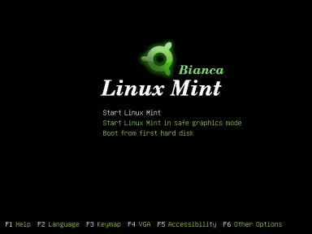
Just hit Enter, sit back, and watch the pretty boot splash as Linux Mint starts up. When everything is loaded, you'll be greeted by a very attractive desktop that can only be appropriately described as mint! Have a look.
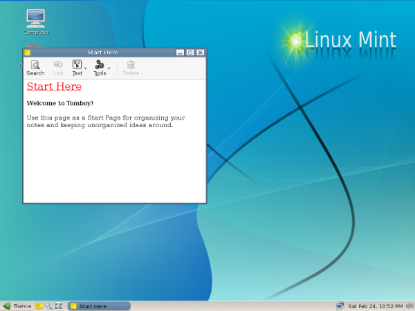
Linux Mint is a Live CD. This means that it boots into a functional OS that runs entirely from the CD. And while in this state you can use it without making any changes to you hard disk. The disadvantage is that you cannot make permanent changes. Each time you reboot all changes are lost. Also, depending on the amount of RAM you have the Live CD is slower than an OS installed on the hard disk. So you can play around with it as a Live CD if you are just trying to see what Linux Mint is all about. But we're not here to play around, we're here to dig into the real stuff! See the Linux Mint icon on the desktop labeled Install? Double click it and we'll be on our way with the installation.

Now, the installation dialog pops up. The first thing I noticed is where it says 'Step 1 of 6' on the bottom left. 6 steps?! Is that how easy installing Linux has become? You bet it is! If we were not going for a dual boot setup, any sort of guide would be totally irrelevant. But don't worry - setting up the dual boot isn't hard either.
Back on track - the first screen is self-explanatory. Choose the language you want for your final system and click Forward.
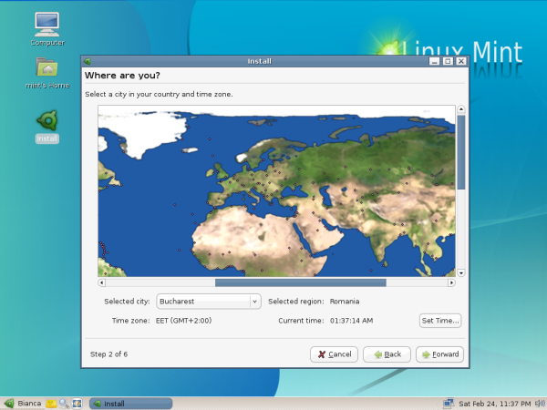
The second step is just as easy as the first: simply choose your time zone from the drop-down list. Optionally, you may click on your region in the world map, and the map will zoom in allowing you to select your city directly. Then click Forward again.
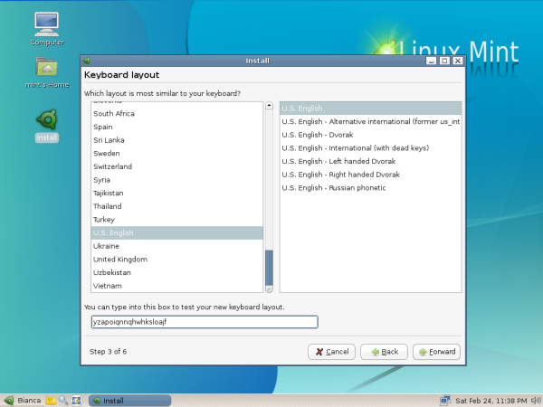
Now, it's time choose your keyboard layout. You can test your keys in the field below the lists (as I have demonstrated). This is so easy... Remind me again, why does this need a guide?
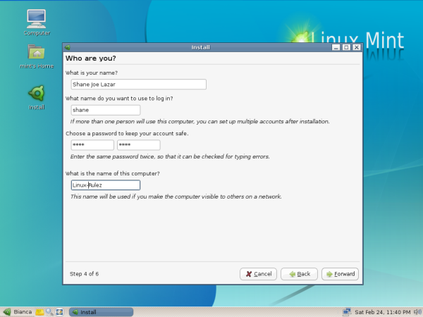
Who are you? No, we don't want a philosophical rant... just enter your full name and the name you want to use to log in. Enter your password twice, and a name for your machine. The account created here will be the administrator account with full control of the OS. I will talk about user accounts at another time. Forward...
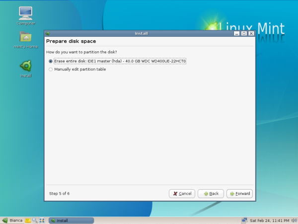
Guess what: we've reached the 'hard' part - disk partitioning. We don't want to erase the entire disk, so we choose the second option. We're going to do this manually! Forward.
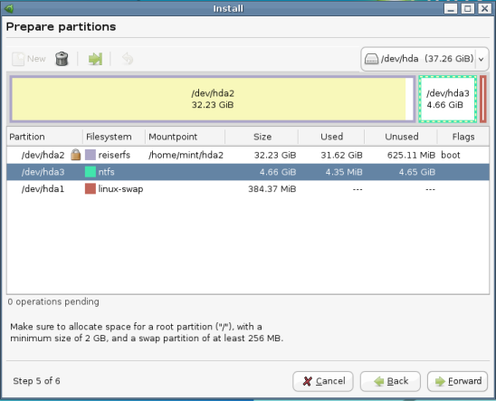
This opens the partition editor application. It will scan all your hard disks and display the present partitions and all their details. If you have more that one physical hard drive, then you can switch between them using the drop-down menu at the top right. Your master drive is usually first - i.e., hda or sda. The slave will be hdb or sdb. And the partitions are numbered as hda1, hda2, hda3 and so on.
If you are attentive, you will notice that my hard disk is divided into three partitions - hda1 is my linux-swap partition, hda2 holds my main installation of Ubuntu Linux and hda3 is my test partition which I use to play around with other Linux distributions. But in this case it is an empty NTFS partition, the file system which Windows XP uses. I am not about to delete my Ubuntu partition just so I can show you how to resize an NTFS partition. So imagine that hda3 is the partition in which you freed 5GB (or however much) for Linux at the beginning of this guide. If you are thinking in terms of C:\, D:\, E:\, etc. drives in Windows, there is no direct correlation between that and the Linux hda1, hda2, hda3, etc. naming system. I suggest going by the size of the partitions and the free space available in each one to know exactly which partition you are going to resize. Right-click on the partition you wish to resize and select Resize/Move. The following dialog will pop up:
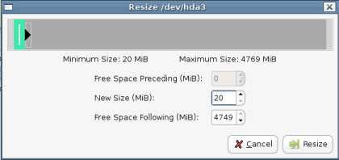
There are a number of ways you can define how you want to resize your partition. The easiest way is just to type the number of megabytes you wish to have for Linux Mint in the last input field where it says 'Free Space Following (MiB)'. For 5GB, you would enter 5000 there. I have less than 5000 in that field, but I am the teacher here - I am allowed to cheat! Actually, I am not. The partition editor will not make any changes until you tell it specifically to do so by clicking the Apply button. So for now, click Resize.
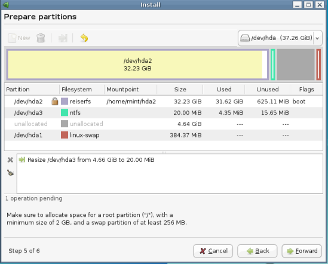
As you can now see, the NTFS partition has been reduced and there is now some unallocated space after it. This is where Mint is going to live.
[ Be careful when altering partitions. Make sure you have a backup of all valuable data and be sure that your computer isn't interrupted when performing the resizing operation. If you know that the system may hang or is unstable, don't do it or try to use a fresh or otherwise unused harddisk. -- René ]
Next, you need to create a primary or an extended partition. This depends on how many partitions you already have on your hard disk and what kind they are. A hard disk can have a maximum of four primary partitions. If your partitions are named hda1 through hda4, they are primary partitions. hda5 and above are extended partitions. So, if you have one or two primary partitions, you can create primary partitions; otherwise, you will will have to create extended partitions.
Every Linux installation needs a swap partition; it is the equivalent of the Windows paging file. Think of it as an extension of your computer's RAM. The general rule is that the size of your swap partition should be the amount of RAM on your machine multiplied by 1.5. However, nowadays with the size of RAM getting very large, the size of swap doesn't need to be very big. I would consider 512MB as a maximum for desktops. Linux Mint recommends a minimum of 256MB. Click on the unallocated space and then click the New button at the top left to create a new partition.
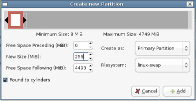
Simply type the amount of swap space that you want in the 'New Size (MiB)' field. As an example, I have 256MB RAM and my swap space partition is 384MB. This much has been more than adequate for my computing needs. I don't need another swap partition - Ubuntu and Mint can both use the one I already have. The space for the swap partition is what I took out of the 5GB earlier when I 'cheated'. Then choose if it is going to be a primary partition or an extended partition, as appropriate, from the drop-down menu, and select linux-swap from the other drop-down menu. Click Add.
Now we will create the partition where we are going to install the actual OS. Click on the remaining unallocated space and then click on the New button at the top left.
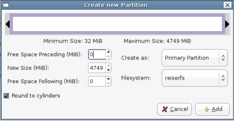
Make sure this partition fills the entire unallocated space - the 'Free Space Preceding' and the 'Free Space Following' fields should both be 0 (zero). Again select primary or extended partition appropriately and choose a file system in the lower drop-down menu. Linux Mint defaults to ext3 which is tried and tested. I prefer reiserfs which is newer and has some performance advantages over ext3. Take your pick. After all, that is what Linux is all about - freedom and choice! Go ahead... click Add.
Have a look at the pending operations in the partitioning application window; check and see if your partitions are the way you want them to be. There's no turning back after this. Take a deep breath and click Apply.
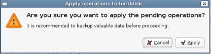
Oops, wait... a warning pops up... click Apply again!
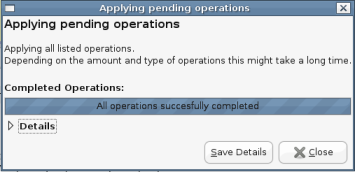
And... success! Click Close.
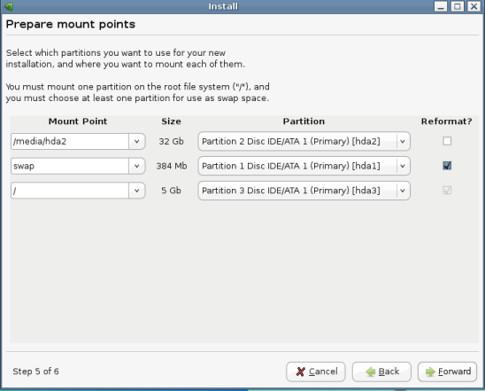
Finally, we reach the end of our lengthy step 5 - partition mount points. Verify that the partition you created for Linux Mint is mounted at /, the swap partition as swap. The rest go under the /media/hd* mount points according to their partition numbers. I am not sure if the NTFS partitions are mounted here by default, since I deleted my NTFS partition. If not, there is a tool to do this later on. Also check that the / and swap partitions are marked for reformatting and the rest are not. That's it - bravo, you are done with partitioning! Click Forward.
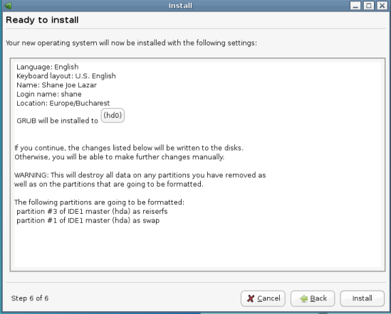
Here we are, at the final step! Actually, this is more of a summary of what the installer will do. The only option here is choosing the location of GRUB, the boot loader (the first thing you will encounter when you boot your computer.) Don't change anything here; most likely, it will work just fine as is. Now, bravely click Install.
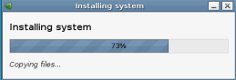
The installation will take about 20-25 minutes, so you can go do whatever it is you do when you've got nothing to do. I fixed myself a midnight snack - eggs and baked beans... No, its not what Linux people eat... It's what lazy people eat. At least nobody is going to bother me today!
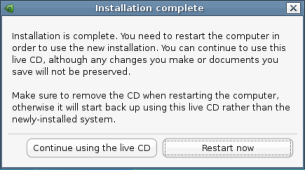
And now, we have reached the end of our journey... actually, your journey has just begun. Just out of curiosity, I actually timed this install. Of course, this is not the first time for me, but I did do it at a leisurely pace - plus I took some of the screenshots you see here. From booting with the CD to rebooting took me just under 55 minutes. Not bad for the so-called 'complicated', 'only-for-geeks' OS. And on top of that, everything worked fine - from playing mp3 files to websites loaded with Flash. Even this article, including all the image editing was done on Linux Mint!
If you discover that you need more help with this distro, go over to the Linux Mint forum and the friendly people there will surely be happy to help.
Meanwhile, go ahead and give that Restart Now button a good whack - and enjoy!
Talkback: Discuss this article with The Answer Gang
![[picture]](../gx/authors/lazar.jpg) Shane is a Medical Resident in Romania. He has been a ardent user of FOSS and Linux since 2004. He spends a sizeable amount of time on Linux forums learning about it and helping others where he can. Currently his favorite distro is Ubuntu, while he has used Mandrake/Mandriva in the past on his desktop and still does for his home network server.
Shane is a Medical Resident in Romania. He has been a ardent user of FOSS and Linux since 2004. He spends a sizeable amount of time on Linux forums learning about it and helping others where he can. Currently his favorite distro is Ubuntu, while he has used Mandrake/Mandriva in the past on his desktop and still does for his home network server.
Last month, I introduced the various TCP congestion control algorithms your Linux kernel knows about. I also mentioned a method, using the kernel module tcpprobe, that allows for measuring the parameters of live TCP connections. Unfortunately, this module requires the presence of a debugging option in the kernel called kprobes. By enabling this, you can dynamically break into any kernel routine and collect debugging and performance information non-disruptively. This sounded good on first impression - but I decided that I don't wish to introduce kprobes on every machine I have; it's better to run less code on servers. Besides, it is not a good idea to run debugging code in kernels that shouldn't be used for debugging. I had to look for other mechanisms. After rediscovering the man pages on my GNU/Linux workstation at home, I found what I was looking for: getsockopt()
The Linux kernel has internal data structures that keep track of active TCP connections and their parameters. This is required, since most TCP connections have a long lifetime (long being tens of seconds, minutes, or even hours). The longer a connection lasts, the more changes on its path can happen. Other TCP connections might throttle the up- or downlink. The link might get disconnected, rerouted, or re-established. Packets might be lost or reordered. All these things have an impact on the TCP performance, and TCP usually reacts by changing its window size (among other things we won't look at right now.) Inside an application that owns a network socket with a live TCP connection, we can always request the current TCP parameters. The man pages of getsockopt() and tcp tell us how to do this - calling getsockopt() with the TCP_INFO option fills a memory structure with information described in struct tcp_info, which is defined in /usr/include/netinet/tcp.h. That's great - just what we're looking for! But how do we collect this information periodically while sending or receiving data?
The man pages refer to C structures and C function calls. I did a lot of C programming on my Amigas, so I decided to dust off my C skills. Since the kernel is written in C, and the GNU C Library has everything prepared, the way to get to our TCP parameters is straightforward.
Right. This sounds quite complete. By adjusting n, you can determine how many samples you get. It doesn't make sense to take multiple samples per TCP packet, which means that you should choose n above the Maximum Transfer Unit (MTU) on your connection path. Besides, if you send streams over the network that contain many megabytes (or even gigabytes), you might want to reduce the sample rate anyway.
We design our code so it can be used as a "TCP sink". We don't want to store all the bytes we read from the network. We just need to fill a buffer up to a maximum of n bytes, look at the TCP parameters, and read the next n bytes. The only things we probably want to save are the parameters. Everything else is fed to the bit bucket.
Let's look at the steps of our strategy with more detail and some code. I am going to describe the task "codewise", line by line. You will get a complete sample of the source to play with, at the end. First, we have to prepare the socket. Then, we have to bind it to a local address. Finally, we have to put the socket into the TCP LISTEN state.
tcp_socket = socket( PF_INET, SOCK_STREAM, IPPROTO_TCP );
if ( tcp_socket == -1 ) {
/* Could not open socket. */
fprintf(stderr,"Could not open TCP socket: %s\n",strerror(errno));
exit(EXIT_FAILURE);
}
else {
/* Bind to any address on local machine */
server_address.sin_family = AF_INET;
server_address.sin_addr.s_addr = INADDR_ANY;
server_address.sin_port = htons(opt_port);
memset((void *)&(server_address.sin_zero), '\0', 8);
status = bind( tcp_socket, (struct sockaddr *)&server_address, sizeof(server_address) );
if ( status == 0 ) {
/* We can now listen for incoming connections. We only allow a backlog of one
* connection
*/
status = listen( tcp_socket, 1 );
if ( status != 0 ) {
/* Cannot listen on socket. */
fprintf(stderr,"Cannot listen on socket: %s\n",strerror(errno));
exit(EXIT_FAILURE);
}
}
else {
/* Cannot bind to socket. */
fprintf(stderr,"Cannot bind to socket: %s\n",strerror(errno));
exit(EXIT_FAILURE);
}
}
The call to socket() specifies that we'd like to have an Internet (PF_INET) stream socket (SOCK_STREAM) that speaks TCP (IPPROTO_TCP). Provided the call succeeds, we prepare a data structure named server_address of the type struct sockaddr_in, which tells the kernel the address and the port to which we wish to bind the socket. We choose all available addresses by using INADDR_ANY, and we'd like to bind on the port stored in the opt_port variable. (The full source handles the options; I left it out in this piece of code.) Be careful when doing network programming! Addresses and ports have a defined network and host byte order. This means that certain bytes might need to be swapped - or not - before putting them from the host side into network data structures and vice-versa. The function htons() converts the unsigned short integer TCP port from host byte order to network byte order. If you look up its man page, you will see that there are other functions for byte order conversion.
Now we can call the bind() function. We need to provide the TCP socket it should act on, and a pointer to a memory region of type struct sockaddr, along with the length of the memory region. server_address is the structure we filled for exactly these purposes. The function call may seem a bit complicated because of the pointer and the size of the structure - but as long as we make sure that the content of server_address is filled with correct values, bind() won't choke on it.
If the binding succeeds, we can put the socket into the listening state. This is done by a simple call to the listen() function. When listening for connections, you can tell the kernel how many connections it should keep in the queue for processing. As of kernel 2.2, this queue consists of completely established sockets waiting to be accepted. Since we don't need to deal with performance issues and multiple connections, we choose 1; we'll let other people worry about the design of a high-performance and multi-threaded TCP sink. After these three steps, our code is ready to accept and process data streams.
client_length = sizeof(client_address); tcp_work_socket = accept( tcp_socket, (struct sockaddr *)&client_address, &client_length );
The call to accept() makes our code wait until a connection is received. client_address is of the same type as server_address was, earlier. It is a storage space for the address of the client that is talking to us. accept() fills out the details as soon as a client connects. In addition, the function returns an identifier of the socket that holds the conversation with our client. Keep in mind that our listening socket will always listen for incoming connections! Every connection we accept creates a new socket; that's why we use the variable tcp_work_socket for this. All we need to do now is to read incoming data. (We could also write "to the other side" and test bidirectional data flow, if we wanted to.)
Our little strategy above missed (or implied, as a matter of perspective) a crucial point. Sampling the TCP parameters is fine, but we need to take another reference as well. We need something that says "we got the parameters at a certain time or at a certain point". This means we have to measure the time elapsed since the connection started. We could use the number of bytes received, but usually it is better to use the elapsed time. Measuring time in C on various platforms deserves an article on its own; fortunately we are bound to Linux (because we want to use the TCP_INFO option of getsockopt(), and this is not portable), and can expect to get time resolution in microseconds. In order to make time management easier, we define two functions: get_now() and time_to_seconds().
/* Get current time. */
void get_now( struct timeval *time, unsigned short debug ) {
if ( gettimeofday( time, NULL ) != 0 ) {
fprintf(stderr,"Can't get current time.\n");
}
return;
}
/* Convert "struct timeval" to fractional seconds. */
double time_to_seconds ( struct timeval *tstart, struct timeval *tfinish ) {
double t;
t = (tfinish->tv_sec - tstart->tv_sec) + (tfinish->tv_usec - tstart->tv_usec) / 1e6;
return t;
}
get_now() is our stopwatch button, and retrieves the current time by calling gettimeofday() and storing it into a memory structure. The second function time_to_seconds() calculates the difference of two time value structures, and converts it into fractional seconds. We have to do that ourselves, since the GNU C Library doesn't provide any functions to do fancy date and time calculations. Other libraries could help us out, but I'd like to stick to basic methods and basic tools. We have other things to do in our code than to worry about fancy functions. You may have noticed the slightly unused function parameter debug in get_now(). I'll explain later what it is for (it's a feature, not a bug).
Now, we start our main loop. We take the time, read the stream buffer by buffer, query the socket and write the parameters to a file. Here's the code.
get_now( &time_start, opt_debug );
while ( (recv_bytes = recv( tcp_work_socket, tcp_buffer, opt_buffer, 0 ) ) > 0 ) {
/* Measure time in order to create time intervals. */
get_now( &time_now, opt_debug );
/* Fill tcp_info structure with data */
tcp_info_length = sizeof(tcp_info);
if ( getsockopt( tcp_work_socket, SOL_TCP, TCP_INFO, (void *)&tcp_info, &tcp_info_length ) == 0 ) {
fprintf(statistics,"%.6f %u %u %u %u %u %u %u %u %u %u %u %u\n",
time_to_seconds( &time_start, &time_now ),
tcp_info.tcpi_last_data_sent,
tcp_info.tcpi_last_data_recv,
tcp_info.tcpi_snd_cwnd,
tcp_info.tcpi_snd_ssthresh,
tcp_info.tcpi_rcv_ssthresh,
tcp_info.tcpi_rtt,
tcp_info.tcpi_rttvar,
tcp_info.tcpi_unacked,
tcp_info.tcpi_sacked,
tcp_info.tcpi_lost,
tcp_info.tcpi_retrans,
tcp_info.tcpi_fackets
);
if ( fflush(statistics) != 0 ) {
fprintf(stderr, "Cannot flush buffers: %s\n", strerror(errno) );
}
}
}
close(tcp_work_socket);
First, we take the time to mark the start of the transmission. It gets stored in time_start, which we use later for calculating relative time. The while loop is our main loop. We call recv(), and fill our buffer tcp_buffer with a maximum of opt_buffer bytes. After the buffer is full, we take the time again. Finally, we call the function getsockopt() and request that a memory region of type struct tcp_info be filled with parameter data from the live stream. The function works in a fashion similar to that of bind(). You have to have a piece of memory ready, indicate its size, give a request code (such as TCP_INFO), and getsockopt() will copy everything to the memory region indicated by the supplied pointer. If the function returns success, we can access the values in tcp_info. You can look up the content of a struct tcp_info structure by viewing /usr/include/netinet/tcp.h. For your convenience, I have a copy of the definition right here:
struct tcp_info
{
u_int8_t tcpi_state;
u_int8_t tcpi_ca_state;
u_int8_t tcpi_retransmits;
u_int8_t tcpi_probes;
u_int8_t tcpi_backoff;
u_int8_t tcpi_options;
u_int8_t tcpi_snd_wscale : 4, tcpi_rcv_wscale : 4;
u_int32_t tcpi_rto;
u_int32_t tcpi_ato;
u_int32_t tcpi_snd_mss;
u_int32_t tcpi_rcv_mss;
u_int32_t tcpi_unacked;
u_int32_t tcpi_sacked;
u_int32_t tcpi_lost;
u_int32_t tcpi_retrans;
u_int32_t tcpi_fackets;
/* Times. */
u_int32_t tcpi_last_data_sent;
u_int32_t tcpi_last_ack_sent; /* Not remembered, sorry. */
u_int32_t tcpi_last_data_recv;
u_int32_t tcpi_last_ack_recv;
/* Metrics. */
u_int32_t tcpi_pmtu;
u_int32_t tcpi_rcv_ssthresh;
u_int32_t tcpi_rtt;
u_int32_t tcpi_rttvar;
u_int32_t tcpi_snd_ssthresh;
u_int32_t tcpi_snd_cwnd;
u_int32_t tcpi_advmss;
u_int32_t tcpi_reordering;
};
The first part consists of administrative information such as state, retransmits, keepalive probes, and options. There's more, and I went through the Linux kernel code to discover where the values come from and what they mean. The best documentation you can get is to look at your kernel's source at /lib/modules/`uname -r`/build/net/ipv4/tcp.c and see how the tcp_info is filled. Look for the tcp_get_info() function inside, and look up the definition of struct tcp_sock in /lib/modules/`uname -r`/build/include/net/tcp.h. Most of the data is copied from this structure. Fortunately, we don't need everything. The main objective is to get the congestion window. If you look at the metrics section, you can see some interesting values. tcpi_rtt and tcpi_rttvar are the Round Trip Time (RTT), and its smoothed mean deviation maximum measured in microseconds. The values tcpi_rcv_ssthresh and tcpi_snd_ssthresh are the slow start size threshold for sending and receiving. Both can be changed dynamically during transmission and reception of data, and put limits on the window sizes. tcpi_snd_cwnd is the sending congestion window. tcpi_advmss is the advertised Maximum Segment Size (MSS). tcpi_reordering indicates the amount of reordering. (I didn't quite figure out the units and values used to indicate reordering, but I found that RFC 4737 defines a packet reordering metric; maybe it has something to do with it.)
We have to keep in mind that TCP can be used to transport data bidirectionally. Our TCP sink will only receive data. In this case, we should expect that only a part of the parameters will change. The values we want to extract are written to a file descriptor statistics by a call to fprintf(). The format string and the list of arguments defines what will be written to the statistics log file. You can select whatever values you want, and have a look at the output when shooting streams at our sink.
|
Category: Protocols
Data transmissions over networks create a wealth of aspects regarding performance and reliability. I am amazed by the efforts the kernel developers put into the code of the Linux TCP state machine. |
The whole source is a bit longer, since I wanted to build a daemon that listens on a socket, receives data, and adds all extracted statistics to a log file. It marks the start and the end of data connections, so that it is easier to parse the log and plot the results. I also added option parsing, which is better suited for changing port number, filename, and the like. The daemon has an option for the debug level as well: if the debug level is greater than 0, the daemon doesn't fork and prints debug messages to stdout and stderr in case something goes wrong. You can download the source tcpsnoop.c, a little header file tcpsnoop.h and a minimalistic Makefile. All you need is the GNU C Compiler and the make utility. After you have compiled the code (running make in the directory where you save the above files should do the trick), the binary's options are as follows.
luchs@nightfall:~$ ./tcpsnoop -h Usage: tcpsnoop [-d] [-D debuglevel] [-f filename] [-h] [-p tcpport] [-b buffersize] luchs@nightfall:~$
The presence of -d tells the program to enter daemon mode. -D sets the debug level. Setting a debug level will automatically disable daemon mode. -f lets you define a file to write to. -p determines the TCP port (default is 42237, can be changed by editing tcpsnoop.h). -b sets the size of the buffer (defaults to 1500 bytes). Daemon mode can be exited by sending a signal. My signal handlers could probably look a lot better, but feel free to turn the sample code into a mean and efficient piece of software.
Now let's see if it works or segfaults. We can test the program by using 127.0.0.1. This is a bit of a boring experience, since we have big bandwidth and minimal RTT. You'll see that the threshold for the receiving window will skyrocket very quickly. Anyway, we need a listener process. We issue the following command on the receiver:
luchs@receiver:~$ ./tcpsnoop -d -f /tmp/logfile.dat -p 23000 -b 4096
We listen on port 23000 for incoming connections, and write every 4096 bytes a line with the parameters of the connection to the file logfile.dat. Note that tcpsnoop always appends data, so you won't overwrite old data.
On the sender's side, you need a simple tool that pipes data to a TCP socket. A combination of cat, a suitable file, and netcat will do nicely.
luchs@sender:~$ cat big_file.pdf | nc receiver.example.net -w 5 23000
A file is piped to netcat, which in turn connects to our receiver on port 23000 and delivers the data. The option -w sets a timeout for the connection. netcat stops reading after 5 seconds. (Remember, TCP is bidirectional, leaving -w out would make netcat wait longer for data coming from the receiver.) Make sure your disk is faster than your network, or preload the file. We want to look at network performance, not at slow disks. While the stream is running our code writes the parameters of the connection to the log file. The logged data should look similar to this:
# Received connection from 127.0.0.1 (AdvMSS 0, PMTU 0, options (): ) 0.000167 0 0 2 2147483647 49304 4000 2000 0 0 0 0 0 0.000256 0 0 2 2147483647 49304 4000 2000 0 0 0 0 0 0.000279 0 0 2 2147483647 49304 4000 2000 0 0 0 0 0 ... 0.004697 4 0 2 2147483647 114840 4000 2000 0 0 0 0 0 0.004759 4 0 2 2147483647 180376 4000 2000 0 0 0 0 0 0.004818 4 0 2 2147483647 245912 4000 2000 0 0 0 0 0 0.004862 4 0 2 2147483647 278680 4000 2000 0 0 0 0 0 0.004879 4 0 2 2147483647 311448 4000 2000 0 0 0 0 0 0.004937 4 0 2 2147483647 376984 4000 2000 0 0 0 0 0 0.004982 4 0 2 2147483647 409752 4000 2000 0 0 0 0 0 0.004998 4 0 2 2147483647 442520 4000 2000 0 0 0 0 0 0.005040 4 0 2 2147483647 475288 4000 2000 0 0 0 0 0 0.005106 8 4 2 2147483647 507904 4000 2000 0 0 0 0 0 ... 0.010765 12 0 2 2147483647 507904 4000 2000 0 0 0 0 0 # Closed connection from 127.0.0.1.
As you can see, only the receiving slow start threshold is changing. You
can now use any tool you want, in order to display the data in another
format. I used gnuplot to create two diagrams. Both show the
transmission of a 7.5 MB PDF file through a VPN tunnel over a 512
kbit/s line with 20ms latency. Just to see if it makes any difference, I
used three congestions algorithms on the sender side (Low Priority, Veno
and Westwood+). I did one transfer per algorithm, one without traffic on
the link, and one while surfing with my browser on multiple news pages.
The graphs are marked with noconcurrent and
browserbackground, respectively.


Caution! These graphs carry no
meaning. They just say that uploading something while a link is utilised
takes longer than on a link without any load. They also say that
inserting different congestion algorithm modules into the kernel leads
to different behaviour. We already knew that. The sole purpose of this
data is to test drive the code we just wrote, nothing more, nothing
less. So the only valid interpretation is "It works!" (or "It seems to
work!" if you believe in bugs). Hooray!
You might wish to issue
echo 1 > /proc/sys/net/ipv4/tcp_no_metrics_save
on both machines to prevent the kernel from storing metric information between different TCP sessions. This is useful for repeated tests from the same IP addresses.
I wrote this article as a follow up to my overview of the different Linux TCP congestions algorithm modules. My only intention was to find out what these algorithms are for and what they do. The outcome was much more than I expected. Data transmissions over networks create a wealth of aspects regarding performance and reliability. I am amazed by the efforts the kernel developers put into the code of the Linux TCP state machine. Few people notice this, when they run their servers and workstations with default values that just work because of all the things that were put into the kernel code. I hope that you have more than enough starting points to read about what I presented. You also have some pre-alpha code to play with. Now that we have a TCP sink, we could code the sender's side as well, and record the real congestion window and the sender's threshold. We will do that, but that's a job for one of the next issues of Linux Gazette.
Talkback: Discuss this article with The Answer Gang

René was born in the year of Atari's founding and the release of the game Pong. Since his early youth he started taking things apart to see how they work. He couldn't even pass construction sites without looking for electrical wires that might seem interesting. The interest in computing began when his grandfather bought him a 4-bit microcontroller with 256 byte RAM and a 4096 byte operating system, forcing him to learn assembler before any other language.
After finishing school he went to university in order to study physics. He then collected experiences with a C64, a C128, two Amigas, DEC's Ultrix, OpenVMS and finally GNU/Linux on a PC in 1997. He is using Linux since this day and still likes to take things apart und put them together again. Freedom of tinkering brought him close to the Free Software movement, where he puts some effort into the right to understand how things work. He is also involved with civil liberty groups focusing on digital rights.
Since 1999 he is offering his skills as a freelancer. His main activities include system/network administration, scripting and consulting. In 2001 he started to give lectures on computer security at the Technikum Wien. Apart from staring into computer monitors, inspecting hardware and talking to network equipment he is fond of scuba diving, writing, or photographing with his digital camera. He would like to have a go at storytelling and roleplaying again as soon as he finds some more spare time on his backup devices.
Recently, I had the opportunity to speak with several KDE developers. Benjamin Reed, Jaroslaw Staniek, and Ralf Habacker are three of the many talented developers working on porting KDE to Mac OS/X and Windows.
Can you tell me about the technical design of the Mac and Windows ports?
Jaroslaw: KDE/Windows should really be considered as "KDElibs/Windows and some KDE applications on Windows". Porting applications to KDE/Windows typically just means making KDE libraries and the build system more "portable". The source code of the applications is largely the same. As an example, I can mention that Kexi's source code, which I develop on Windows, is often committed to SVN without prior checking on other platforms. Then, I just update another copy of the same source code from SVN on Linux, and recompile. There are few, if any, and easily fixable problems with this method, usually related to difference between compilers. You get the idea; this is how portable development works.
There is one assumption many of the developers agree on: we re-use as much of the native interface as possible. However, we do not perform any forks that would make ported applications non-standard in terms of file formats or protocols. I personally tend to give up on a given functionality (and look for a replacement) rather than go with using a proprietary technology. A small example of this is my use of the 'mdbtools' project to access the MS Access file format, instead of using native Windows DAO/ADO API. This is not even a matter of licensing (because many APIs are considered "system-level" technology), but more about a strategy. Other examples of re-using lower-level layers are multimedia frameworks. An example of an existing facility that should not be replaced in a typical installation is the explorer.exe desktop shell.
Benjamin: For the OS/X port, right now there is no specific "technical design" beyond what KDE provides in general, and as far as the technical challenges involved, there is not a lot going forward that isn't a general challenge to the KDE codebase. I know that's not much of an answer, so I need to back up a little into the history of it.
Back in the day, Sam Magnuson (a Trolltech employee) did a bunch of work to rip out the X11-related code in the KDE3 codebase and got it to compile against Qt/Mac 3.x. I picked up where he left off, and did a lot of work trying to clean up the patches, make it look a little nicer, etc. Around the same time, the Windows folks had started working on cleaning things up on their side. Time went by, and the Mac port stagnated, mostly because I'm not really much of a C++ coder, and I'd hit the limit of what I was able to do on my own. No one else really had the time to work on it with me (although there was certainly still a lot of interest.) Most of my porting time went into maintaining other Fink packages, and keeping the Fink KDE/X11 port up-to-date and working smoothly. In that time, the Windows folks did a lot of awesome work on committing bits of my and Sam Magnuson's work, along with a ton of their own, cleaning up the code, removing X11-isms, etc.
Fast forward to KDE4, I talked with various folks in #kde-devel, off and on, about wanting to pick up the Mac port again, and about the feasibility of really making a go at it. One of the things that really made the port possible was the move to Qt4, and a real dedication on the part of the KDE core folks to try to use official Qt APIs for things that had been hacked-around at the X11 level in KDE3 (and a commitment from Trolltech to add proper APIs for things that required hacks before.) In addition, there were a lot of awful hacks that needed to be done to the existing autotools-based build system (automake, autoconf, libtool) to make things even build on OS/X against frameworks.
The move to the SCons build system made building on Mac feasible, and the subsequent switch to CMake made it easy: CMake has had a very large role in making it simple (and sane) to make KDE GUI and console applications cross-platform without a lot of work on the developers' part. Mac OS/X has a lot of quirks at the compiler and linker level that make it hard to understand building (especially dynamic-loading) if you come only from a Linux point of view. CMake makes that completely transparent. A lot of the ease of porting now comes from Alexander Neundorf's awesome work getting KDE to build with CMake.
So, to make a long story short, there used to be a lot of technical code hurdles to getting KDE to build on non-X11, but many of those were hashed out late in the 3.5 cycle, and early in the 4.0 cycle, thanks to the work of a lot of talented and dedicated people. At this point, there are only a few small platform-related issues for the Mac port, and the rest is really just a matter of keeping up with KDE4 development and fixing small problems before they snowball into big ones.
What were some of the technical challenges facing the developers?
Jaroslaw: The integration with facilities existing on the target platform and the look and feel.
There is some probability that in special cases platform-dependent looks will be configured. Think about toolbars on Mac and Windows, as well as features related to window management (full screen, etc.) Thanks to our API, KDElibs tend to provide well-defined helpers that behave appropriately for every given environment. Many of these facilities are also delivered by Qt - namely, the accessibility API - so KDE developers can focus on preparing higher-level facilities.
What were some of the technical requirements for building KDE on Windows?
Jaroslaw: On Windows, many dependencies are not considered as "system" libraries, so these are delivered within the so-called KDE development environment. The environment is needed only for developers, not users. The general rule here is that we try to have the environment as self-contained as possible, to make new developers' lives easier. There are two main compilers used on Windows: 'gcc' and MS Visual C++, aka 'msvc'. Since C++ does not define de-facto binary compatibility between compiles from various vendors, when distributing binaries, both targets will be (probably) distributed together.
Jaroslaw: CMake is used as a high-level build system for KDE4, on top of compilers and particular environments. This is a positive change, since for KDE3/Windows Qt's 'qmake' was used, without any chances for using advanced and automated configuration checks. Now, for instance, if you need MySQL support in your application, it is possible to declare this fact once in your CMake build file, and the build system will try to find all the needed facilities for this requirement.
KDE's relationships with Trolltech is well known. In version 4, KDE is even more a place where community and companies meet for mutual benefit. CMake is an advanced buildsystem delivered by Kitware, Inc. and others. In fact, it's not only delivered as-is but there are also CMake releases with many features needed, especially with a large project like KDE.
Were there any special requirements for Mac OS/X?
Benjamin: For Mac OS/X, nothing all that special other than XCode (Apple's GCC compiler set). KDE has a lot of dependencies to get the most out of it, so if you don't want to spend days compiling libpng, dbus, etc., then you probably want to install my Qt4 and "kdesupport" packages on the Web site. I provide pre-made packages, which include headers and dev libraries, so that you can pretty much just jump in compiling KDE SVN if you'd like.
What is the distribution strategy?
Jaroslaw: On Windows, there is an installer that installs the development environment. In the end, there will be a choice between installing just the runtime for users and runtime+development files for developers. You can get more information at KDE Lists.
On Mac OS/X, right now I'm putting together Apple Installer packages, with everything self-contained in '/opt' to avoid getting in the way of other software. Eventually, my goal is to also provide KDE4 through Fink, but I'm not going to bother doing so until we get closer to a beta quality, at the least, but even so I will probably continue creating the installer packages. I have it pretty much automated, and it provides a really easy way to just drop a running KDE4 setup on a system without any external dependencies.
|
Category: Promotion
If "adding" KDE to a Mac or Windows machine gets millions of people who otherwise would not try OSS, then so be it. I am convinced that once a person tries OSS, they will get hooked on it. |
What are the timeline, support options, and future development going forward?
Jaroslaw: The timeline for the KDE/Windows target is dependent on KDE4's plans. In general, porting efforts and updates provided try to follow the mainstream development, i.e., the one for Unix target. There are already people (including me) interested in commercial development using the development facilities of KDE on Windows. There is the KDE ISV subproject in development. There is no doubt the user base is growing, and we now have an active community around this target, which helps the KDE Project in general.
The design covers two steps:
1. KDE on Windows uses current code and similar packaging as on Unix and to have KDE applications as they are, with a minimum of required porting effort. This is to show people how it works and to get Windows in contact with KDE applications. In this step, the basic differences between Unix and Windows must be fixed (fork/exec and Unix domain sockets not available on Windows, no undefined symbols in shared libraries possible, different file path syntax, etc.)
2. When enough developers are available, they could make partial redesigns of KDE internals to use specific Windows features like named pipes for faster IPC, or be able to have standalone applications - for example, Konqueror or Kontact/Kmail - not require many additional background processes running, as is the case now. I can imagine having a redesigned klauncher, kded and kioslaves included into a standalone application; the latter may be using threads or something similar. Jaruslav has gone already this way with Kexi.
Are there more features and ideas in the works?
Ralf Habacker: The current implementation of KDE is designed in a Unix-specific way, which is partially different from the Windows way. Examples for this are:
There are different application interfaces. Windows, for example, has a TCP socket stack similar to the Unix one, but it differs in some areas, which makes porting harder. Windows named pipes have a completely different API, which required a partial redesign of KDE code.
After Qt4/GPL was released, our next step was clear: build a native kdelibs4 on Windows. The main problem is that we're too few people with too much work (starting with a native dbus implementation, and ending with a working KDE app on Windows, to show others that we are really moving forward). Because of this, I'm happy for any publicity to get new developers, which could help because we're all doing this in our spare time.
Some of the developers working on the Windows port are Peter Kümmel, Holger Schröder and Christian Ehrlicher. On the Mac side, there are Derek Ditch, Alexander Neuendorf, Marijn Kruisselbrink and Tanner Lovelace, just to name a few. There are many more who have contributed in the past that were integral in making these projects a success. All the hard work they have done will have the cumulative effect of exponentially increasing the number of people who get exposed to and use Open Source Software.
I believe that KDE porting their Desktop Environment to Mac OS/X and Windows to be a watershed moment for Open Source Software. By and large, people are resistant to change, and in all my interactions with strangers, friends, and family, I have learned creative ways to describe what using Linux is like, or how to run it from a liveCD or how to install it on a PC. I have learned to stay away from the word "change", and use the word "add" instead.
It is much easier to convince someone to try Open Source Software
if you describe it as "adding" something to his/her computer,
rather than "changing" it. Many who read this do not look
at "changing" a computer with apprehension or fear, but we are not
in the majority. If "adding" KDE to a Mac or Windows
machine gets millions of people who otherwise would not try OSS,
then so be it. I am convinced that once a person tries OSS, he/she will
get hooked on it. It is easier than starting smoking.
From the day I first downloaded Firefox, my addiction and/or love affair with OSS has flourished unabated. It started with Firefox and progressed into using only FOSS within two years. Why? Because I chose to. After using it every day and comparing it to proprietary software, it was a "no-brainer" to switch to Open Source Software entirely. There was no loss in quality of applications, security, and functionality on my machine. There was a significant increase in the quality and choice of applications I could use, and by switching to Linux, my computer became a bank vault compared to whatever it was running Windows. How did all this happen? I started using one program, got hooked, and never looked back.
Soon, everyone who owns a computer will be able to try and use OSS, and all they will have to do is "add" software to their computer. That shouldn't be too hard; people add software to their computers every day, right? So, lets say that 25 to 50 million people who had never tried OSS before, try it because all they have to do is "add" some software to their computers. Those of you who have surfed before will know what I mean when I say this: you're lying on your board and you look out into the ocean and see a bulge in the water and you think to yourself "Is that the next big wave coming in?" The answer is yes - this is indeed the next big wave coming in.
Cheers!
Scott Ruecker
Links:
Talkback: Discuss this article with The Answer Gang
Scott Ruecker lives in Phoenix, Arizona. He works as an IT Manager and plays Drums in an alt-rock band every Saturday night. First exposed to FOSS when he heard about "This Linux Thing" in 2002. Got his start on Fedora, SuSE and Kubuntu. He currently uses Debian, Knoppix and DSL for his really old machines.
Our Mailbag Editor, Kat Tanaka Okopnik, caught up with Orv while attending SCaLE and instantly decided that this cheerful, likeable, energetic fellow deserved to be lightly grilled and served up to our readers. After an exchange of emails at 50 paces (or 3000 miles - it was rather difficult to tell from the ping times), the following interview came into being.
Seriously, though - Kat and I attended SCaLE and enjoyed it very much; Orv
and his fellow Linuxers did an excellent job of getting everything set up,
and the event went off as smoothly as any of the larger Linux cons that
I've attended in the past. Be sure to join Orv and friends next year, as
they spin up SCaLE 6x; if it's anything similar to the way SCaLE 5x turned
out, it'll be a "don't miss" event.
-- Ben Okopnik
Kat: What makes SCaLE different from other conferences?
Orv: It's certainly different from LinuxWorld Expo, which is almost completely commercial. That's OK - that's their focus. But SCaLE is focused on educating the end user. And in fact, that's in our mission statement. We try to cover a broad range of topics of interest to the Open Source software user, be they home user or system administrator.
To be fair, there other other non-commercial conferences, and their number is growing: Along the same vein as SCaLE are the Ohio Linux Fest (http://www.ohiolinux.org/) and LinuxFest Northwest (http://www.linuxfestnorthwest.org/). Obviously these regional conferences are filling a need!
Kat: Who is (are) SCaLE's primary audience? Who should attend SCaLE as their primary or only conference?
Orv: To be honest, it's all over the map. We get everyone from corporate IT guys clear down to high school students - and they're all equally valuable; the computer club student of today will be an IT direction-influencer in four or five years. We believe that SCaLE is equally valuable to each attendee. It's worked out that we've had a "newbie" session track on alternate years recently, and those sessions have been some of the most heavily attended at SCaLE. So, obviously we have an attraction to the newcomer to Linux and Open Source Software.
We frequently have developers from the Open Source community attend SCaLE, too. Their talks about what's coming up lets attendees get a glimpse of the future in Open Source computing, and that's very exciting.
Kat: How did you get involved with SCaLE?
Orv: I've belonged to SCLUG (the Simi-Conejo Linux Users Group, in western Ventura County, California), since about 1998. As the Information Systems Manager at the Nortel facility in Simi Valley, I was able to offer the facility as a meeting place for SCLUG. In 1999, Gareth Greenaway, one of the founders of SCLUG, suggested that SCLUG host a "LUGFest" which would be an event where users or groups could demonstrate some aspect of Open Source software. The first LUGFest was held one afternoon in the Nortel Simi Valley cafeteria. It had about ten demonstrations and drew about 100 people. In spite of those semingly small numbers, SCLUG knew they were onto something. LUGFests were held every 6 months thereafter, and LUGFest IV held over two days, drew almost 400 people. Every meeting room in the Nortel facility was booked for a seminars, and about a dozen vendors actually attended.
Shortly thereafter Nortel, being a pioneer in the dot-com crash, closed their Simi Valley facility. SCLUG found an alternate place to meet, but it brought the LUGFests to an end.
However, the LUG members realized that the LUGFests filled a need, a hunger for more information about Open Source software, and were determined to replace them with something equivalent. Discussions with other LUGs resulted in a collaboration of SCLUG, the UCLA LUG and the USC LUG. That led to SCaLE 1, which was held in USC's Davidson Conference Center in November of 2002. It was a one day affair, with 26 booths, and drew 400 people.
Growth in size and attendance has been steady year over year. SCaLEs 2x and 3x were held at the Los Angeles Convention Center. SCaLE 4x was held at the Radisson hotel down the street from LAX. The recently held SCaLE 5x had an expo floor 35% larger than that of S4X, and 25% more booths. It had 69 exhibitors' booths, and resulted in over 1300 badges being printed (including vendors and exhibitors), compared to 900 the year before. That growth reflects the increasing popularity and use of Open Source software.
Kat: What's the most unexpected thing about SCaLE?
Orv: How far people will come to participate in a regional computer show. We have speakers come from all over the globe, and an estimated 15% of our guests come from outside of California.
Kat: What was new this year at SCaLE? Are you planning to repeat it?
Orv: We're always trying new things. We were at a new location this year, necessitated by our growth. We tried vendor showcases this year. They was not especially successful, so we'll consider whether we'll continue them or not. This year we also had wireless in the speaker rooms, which was very popular. We also "ruggedized" the network on the Expo floor, making it more resilient to adverse network conditions. That was very successful. We're always on the lookout for things that will improve the attendee experience.
Kat: What makes an in-person gathering like SCaLE different from a net.conference?
Orv: In spite of all the high-tech ways to communicate, face-to-face communication remains a very human, satisfying method of transferring information. The Expo provides an effective way for people to gain information they wanted, and also information they didn't know they needed (the serendipity thing - "I didn't realize there were three Open Source network management packages!")
Kat: What surprises people about SCaLE?
Orv: Several things; we get a number of comments every year from people like, "Wow, I didn't realize there was a Linux show in Los Angeles", in spite of this being our fifth year and in spite of our best PR efforts. Another thing that surprises some, mostly vendors, is that SCaLE is run with an all-volunteer staff.
Kat: What was your favorite SCaLE moment?
Orv: Although we continually work to reduce the wait times at Registration Saturday morning, seeing 60 people line up a half hour before opening is very satisfying. It's also extremely satisfying seeing members of the Open Source community step up and help put SCaLE on; it wouldn't be the success it is without the several dozen volunteers that step up every year to assist.
Kat: What's the best thing about being at SCaLE?
Orv: Seeing the energy and excitement on the Expo floor. Because it's held on a weekend, people who attend SCaLE are they because they WANT to be there.
Kat: What do you see SCaLE doing for next year's Expo?
Orv: The Friday mini-conferences have worked out very well the last couple of years. While the chairs haven't decided all the details, we've pretty much decided that SCaLE will be a three-day event from here on out. The Friday events haven't been nailed down for sure yet, but we may reprise an expanded healthcare mini-conference, since it was so successful this year. We're also considering Open Source in education as a valuable topic for the community. Whether it will be a Friday mini-conference, a specific session track on the weekend, or something else has yet to be decided.
In closing, we'd like to thank the local Open Source community for their support. Without them, SCaLE couldn't happen; they've made it the success it's become. Open Source software in Southern California is alive and well!
Talkback: Discuss this article with The Answer Gang

Kat likes to tell people she's one of the youngest people to have learned to program using punchcards on a mainframe (back in '83); but the truth is that since then, despite many hours in front of various computer screens, she's a computer user rather than a computer programmer.
When away from the keyboard, her hands have been found full of knitting needles, various pens, henna, red-hot welding tools, upholsterer's shears, and a pneumatic scaler.
These images are scaled down to minimize horizontal scrolling.
All HelpDex cartoons are at Shane's web site, www.shanecollinge.com.
Talkback: Discuss this article with The Answer Gang
Part computer programmer, part cartoonist, part Mars Bar. At night, he runs
around in his brightly-coloured underwear fighting criminals. During the
day... well, he just runs around in his brightly-coloured underwear. He
eats when he's hungry and sleeps when he's sleepy.
By Samuel Kotel Bisbee-vonKaufmann
|
1
|
2
|
3
|
4
|
5
|
* |
6
|
7
|
8
|
9
|
|
10
|
* |
11
|
|||||||
|
12
|
* |
13
|
|||||||
| * | * | * |
14
|
15
|
* |
16
|
|||
|
17
|
18
|
19
|
* |
20
|
|||||
|
21
|
* |
22
|
23
|
||||||
|
24
|
* |
25
|
* | * | * | ||||
|
26
|
27
|
* |
28
|
29
|
30
|
31
|
|||
|
32
|
* |
33
|
|||||||
|
34
|
* |
35
|
|
Across 1: The Free Software Desktop Project 6: Sam_, skilled (2 wds) 10: yacc replacement 11: US_, small removable media (2 wds.) 12: `sed -e 'n;n;G;'`, insert a blank line every _ line 13: Sy_in, root synonym 14: Allowed tandem identical PCI Express cards to be run 16: One of three basic cryptographic scheme attacks (abbr.) 17: Multiple shells from one shell 20: `date +%-k%-k` 21: Freedom _ster, provides distro vending machines 22: Smalltalk implementation 24: Comprises a DN in LDAP 25: Pico Con_ 26: `sed -e 's/:/ /g' /etc/passwd | awk '{print $3}'` 28: _Ape, graphical network monitor 32: Oracle JDeveloper's _e class extends TreeNode 33: Seeds a specific number generator in C/C++ 34: Segmentation messages (abbr.) 35: KOrganizer helps manage these |
Down 1: Not so normal gigabyte abbr. 2: _ Class Library, formerly known as OOPS 3: Maintains the Open Source Definition 4: _ code, 1830s telographic data transmission system 5: `until [[ 1 == 2 ]]; do echo ""; done` 6: Early Internet forum system 7: Common web server 8: A soft felt hat that sits next to a red hat 9: 255.255.255.0 to 0.0.0.0 15: "An _", ShowUsTheCode.com is doing this 17: Servlet/JSP framework from 7D 18: A true meaning of hacking 19: 32A cannot generate truly _ numbers 23: _Linux, a SPARC family port 27: 6D admin. tool 29: High availability subsystem (abbr.) 30: `echo -e "\0105\0116\0113"` 31: _d stores analog radio data for _query and lib_ |
|
1
A
|
2
S
|
3
K
|
* |
4
M
|
5
O
|
6
S
|
7
A
|
8
I
|
9
C
|
|
10
B
|
P
|
M
|
* |
11
A
|
P
|
P
|
E
|
N
|
D
|
|
12
O
|
E
|
M
|
* |
13
N
|
E
|
U
|
R
|
A
|
L
|
|
14
R
|
E
|
M
|
15
O
|
U
|
N
|
T
|
* | * | * |
|
16
T
|
C
|
A
|
F
|
* |
17
S
|
N
|
18
I
|
19
D
|
20
E
|
|
21
S
|
H
|
I
|
F
|
22
T
|
* |
23
I
|
F
|
U
|
P
|
| * | * | * |
24
L
|
I
|
25
N
|
K
|
D
|
C
|
I
|
|
26
M
|
27
O
|
28
B
|
I
|
L
|
E
|
* |
29
O
|
D
|
C
|
|
30
S
|
O
|
U
|
N
|
D
|
S
|
* |
31
W
|
L
|
A
|
|
32
S
|
T
|
R
|
E
|
E
|
T
|
* |
33
N
|
S
|
L
|
Talkback: Discuss this article with The Answer Gang
Samuel Kotel Bisbee-vonKaufmann was born ('87) and raised in the Boston, MA area. His interest in all things electronics was established early as his father was an electrician. Teaching himself HTML and web design at the age of 10, Sam has spiraled deeper into the confusion that is computer science and the FOSS community, running his first distro, Red Hat, when he was approximately 13 years old. Entering boarding high school in 2002, Northfield Mount Hermon, he found his way into the school's computer club, GEECS for Electronics, Engineering, Computers, and Science (a recursive acronym), which would allow him to share in and teach the Linux experience to future generations. Also during high school Sam was abducted into the Open and Free Technology Community (http://www.oftc.org), had his first article published, and became more involved in various communities and projects.
Sam is currently pursuing a degree in Computer Science at Boston University and continues to be involved in the FOSS community. Other hobbies include martial arts, writing, buildering, working, chess, and crossword puzzles. Then there is something about Linux, algorithms, programing, etc., but who makes money doing that?
Sam prefers programming in C++ and Bash, is fluent in Java and PHP, and while he can work in Perl, he hates it. If you would like to know more then feel free to ask.
This month's Launderette was compiled by Kat Tanaka Okopnik while Jimmy O'Regan was nefariously distracted by bus-driving evil Martian princesses. He's got a more harrowing explanation entitled "The Dog Ate My Laundry", but who do you believe, really?
Jimmy ORegan [joregan at gmail.com]
Fri, 2 Feb 2007 23:06:00 +0000
http://www.linuxguitar.org/ (http://www.linux.com/article.pl?sid=07/01/31/1951219)
I can only think of 2 negatives: a) my birthday isn't until July b) I
don't know anyone rich enough to buy me one 
Predrag Ivanovic [predivan at ptt.yu]
Sat, 3 Feb 2007 16:00:38 +0100
Quote:
Linux Genuine Advantage[tm] is an exciting and mandatory new way for you to place your computer under the remote control of an untrusted third party! According to an independent study conducted by some scientists, many users of Linux are running non-Genuine versions of their operating system. This puts them at the disadvantage of having their computers work normally, without periodically phoning home unannounced to see if it's OK for their computer to continue functioning. These users are also missing out on the Advantage of paying ongoing licensing fees to ensure their computer keeps operating properly. To remedy this, we have created a new program available as a required free download: Linux Genuine Advantage[tm].For more fun, check out the comments in the source
My favorite:
# loop continuously, checking periodically to see if the author of this program got paid. # if no money has changed hands after 30 days, make the computer less useful as punishment.http://www.linuxgenuineadvantage.org/
Pedja
--
To design the perfect anti-Unix, write an operating system that thinks
it knows what you're doing better than you do.
And then adds injury to insult by getting it wrong.
--esr in "The Art of Unix Programming"
[ Thread continues here (3 messages/2.96kB) ]
Rick Moen [rick at linuxmafia.com]
Mon, 5 Feb 2007 11:48:26 -0800
A slice of daily life on the Ex-VA Linux Systems (EVALS) mailing list.
----- Forwarded message from Don Marti <dmarti at zgp.org> -----
Date: Sun, 4 Feb 2007 18:42:18 -0800 From: Don Marti <dmarti@zgp.org> To: TAG <tag@lists.linuxgazette.net> To: evals at lists.merlins.org Subject: Re: Worst Linux distribution names everbegin Marc MERLIN quotation of Fri, Feb 02, 2007 at 10:42:22PM -0800:
> On Sat, Feb 03, 2007 at 01:09:38AM -0500, Michael Jennings wrote: > > On Friday, 02 February 2007, at 22:05:29 (-0800), > > Marc MERLIN wrote: > > > > > > "Ubuntu" is Swahili for "F@@k me up the ass with a pine tree." > > > > > > Are you feeling resentful for having picked the wrong distro?
I refuse to teach my shift key finger how to capitalize gnewsense. Or however they spell it.
At least Yggdrasil sounds like they're trying to capture the prestigious Rick Moen market with obscure Norse mythology references.
-- Don Marti http://zgp.org/~dmarti/ dmarti at zgp.orghttp://lists.merlins.org/lists/listinfo/evals
----- End forwarded message -----
----- Forwarded message from Rick Moen <rick at linuxmafia.com> -----
Date: Mon, 5 Feb 2007 11:43:47 -0800 To: evals at lists.merlins.org From: Rick Moen <rick@linuxmafia.com> To: TAG <tag@lists.linuxgazette.net> Subject: Re: Worst Linux distribution names everQuoting Don Marti (dmarti at zgp.org):
> At least Yggdrasil sounds like they're trying to > capture the prestigious Rick Moen market with obscure > Norse mythology references.
(Don't make me go all Mjølner on yo' ass.)
Hey, there are even reputed to be languages in which "Rijndael" has sensible pronunciations.
[ ... ]
[ Thread continues here (2 messages/4.61kB) ]
Rick Moen [rick at linuxmafia.com]
Fri, 9 Feb 2007 10:53:25 -0800
Truly an enlightened soul.
----- Forwarded message from camorris <camorris at mars.ark.com> -----
From: camorris <camorris@mars.ark.com> To: TAG <tag@lists.linuxgazette.net> To: Deirdre Saoirse Moen <deirdre at deirdre.net>,Rick Moen <rick at linuxmafia.com>, Karsten Self <karsten at linuxmafia.com> Cc: camorris at mars.ark.com
Date: Fri, 9 Feb 2007 09:11:37 -0800Reply-To: camorris at mars.ark.com X-Mailer: Digital Ark WebMail v1.2
Subject: Inner PeaceI am passing this on to you because it definitely works, and we could all use a little more calmness in our lives. By following simple advice heard on the Dr. Phil show, you too can find inner peace.
Dr. Phil proclaimed, "The way to achieve inner peace is to finish all the things you have started and have never finished." So, I looked around my house to see all the things I started and hadn't finished, and before leaving the house this morning, I finished off a bottle of Merlot, a bottle of White Zinfandel, a bottle of bailey's Irish Cream, a bottle of Kahlua, a package of Oreos, the remainder of my old Prozac prescription, the rest of the cheesecake, some Doritos and a box of chocolates. You have no idea how freaking good I feel. Please pass this on to those whom you think might be in need of inner peace.
----- End forwarded message -----
Rick Moen [rick at linuxmafia.com]
Wed, 14 Feb 2007 19:34:57 -0800
An estimated one billion greeting cards have been sent out to various people's inamoratas to help celebrate the feast of Saint Valentinus. If you're Catholic and your calendar says it's later than 1969, then please be advised that Valentine got defrocked just after the Summer of Love (a Vatican II thing).
If you're Eastern Orthodox, then you do still have a Hagio Valentinus -- but his saint's day is July 6th.
If you'd rather celebate a less Hallmark holiday, wait until tomorrow, which is Lupercalia, aka Februatio, the festival of purification, in which Romans rang out the old year in high fashion: Priests of Faunus dubbed the "Luperci" (brothers of the wolf) would gather near the cave of Lupercal on Palatine Hill (where the she-wolf was supposed to have raised Rhea Silvia's kids, Romulus and Remus) to sacrifice two male goats and a dog, smearing blood on their foreheads, eating a feast, then dress in (only) the newly flayed goatskins and run a circuit around the city walls carrying lashes cut from the sacrificial victims. As they ran, they lashed young women along their route, to help ensure fertility.
Plutarch commented (in The Parallel Lives): "At this time many of the noble youths and of the magistrates run up and down through the city naked, for sport and laughter striking those they meet with shaggy thongs. And many women of rank also purposely get in their way, and like children at school present their hands to be struck, believing that the pregnant will thus be helped to an it is delivery, and the barren to pregnancy."
Killjoy Pope Gelasius I abolished Lupercalia, and declared the feast of St. Valentine in its (approximate) place, in 496.
Anyhow, more goatskins and fewer greeting cards, I say.
-- Superpolylogarithmic subexponential functions! / Faster than a polylog but slow- er than exponential. / Even though they're hard to say, they're truly quintess- ential. / Superpolylogarithmic subexponential functions! / Um diddle diddle did- dle, um diddle ay! / Um diddle diddle diddle, um diddle ay! -John S. Novak, III
Jimmy ORegan [joregan at gmail.com]
Wed, 28 Feb 2007 16:48:40 +0000
On 28/02/07, Kat Tanaka Okopnik <kat@linuxgazette.net> wrote:
> On Wed, Feb 28, 2007 at 04:22:08AM +0000, Jimmy O'Regan wrote: > > On 28/02/07, Jimmy O'Regan <joregan@gmail.com> wrote: > > >On 27/02/07, Kat Tanaka Okopnik <kat@linuxgazette.net> wrote: > > >> Hi - > > >> > > >> It's getting a bit late in the month to ask this, but I'm guessing that > > >> you're still swamped and not up to Laundrette. > > > > > >No... I'm going to have to surprise you with the lesser-known excuse > > >"I have most of the work done, but it's in my parents house, and I > > >can't currently complete it as I have the flu, and my sister is living > > >there with her newborn daughter". > > My. That's a very good excuse.
Isn't it? I wish I'd had a few of similar calibre when I was at school :D
> > > Ava, 6lb 11oz, born 6.24am on the 23rd
Same thing. We're quite familiar with him
> > >And that's just the stopping point... > > > > The rest of the story (of course there's a story, I'm Irish &c. &c.)... > > But this isn't blarney, I'm sure. > > > I would have been able to do some last minute work on it today, but > > I was in court - on the 8th I went to the pub for an hour and a half, > > and passed out while crossing the street afterwards. The woman who > > almost ran over me phoned the Gardai, and I was arrested. > > Yoiks! (We're awfully glad that was only "almost".)
Me too!
> > I blame the insomnia I've been suffering since the end of the last > > year (and, fortunately, the judge seemed to agree): this isn't the > > first or last time that I've passed out from simple fatigue recently. > > Given your new duties, that's rather worrying.
Actually, I slept last night, and most of today, without resorting to chemical assistance. Now that the court visit is behind me I feel free to relax about the whole thing.
That, and I've stopped drinking coffee after 6pm
[ ... ]
[ Thread continues here (1 message/7.48kB) ]
By Ben Okopnik and Kat Tanaka Okopnik
The past month has been quite the whirlwind adventure - both in the positive and the negative senses of the phrase. For one thing, it's been one continuous roadtrip: Denver, Boston, Los Angeles, New York, and back to Boston for a week apiece, living out of a suitcase and amid frantic arrangements in an ever-changing, bewildering galaxy of hotels, flights, and car rentals. In the midst of all that, I've also been dealing with dying computers, dying relatives, living relatives (which can, at times, be a much worse ordeal), new business coming in like gang-busters (not that I should complain), trying to handle current commitments - including publishing LG from the road... and, as always, trying to take a moment to sniff the flowers and listen to the sound of the surf breaking on the rocks. Whatever else happens, a life that doesn't include a quiet moment for appreciation of the beauty around us is not one that I'd want to live.
While in LA, Kat and I managed to attend the Southern California Linux Expo (SCaLE) and had the great pleasure of meeting one of the LG regulars, Kapil Hari Paranjape - who took the opportunity to crank out a con report, which we're publishing in this issue. Kat had her own take on the proceedings:
When Orv Beach invited us to the Southern California Linux Expo (SCaLE), Ben and I had planned to make a weekend of it.
Boston weather, airplanes, and the resulting winter blahs intervened and we ended up doing SCaLE in one whirlwind day, but we managed to float a new tag line for LG (The Free International Online Linux Monthly), introduce ourselves and exchange contact information with nearly every exhibitor, collect some nifty gimmes (I really like my Google-femme babydoll t-shirt!) and get interviewed by Oscar Toscano of Todo Exito (http://www.todoexito.com).
If you've always wanted to hear what we sound like, you can hear (a badly congested and nearly voiceless) Ben and me in our LG audio debut here: http://www.todoexito.com/podcasts/view/22 .
You can find the other SCaLE interviews (including Krugle, HaikuOS, and Perl Programmers Group LA) at http://www.todoexito.com/s/tags/Linux Expo Scale Conference .
There's also more SCaLE followup (photos and other con reports) at: http://www.socallinuxexpo.org/scale5x/pr.php .
All in all, SCaLE was a lot of fun: a bunch of Linux people doing interesting things and putting the message out to the world. And it seems that the world is listening: even though this was a regional show, the exhibitors included IBM, Sun Microsystems, Dell, Google, Novell, Ticketmaster and many others. If you're in the area, be sure to mark your calendar: SCaLE 6x is coming, and it'll be larger and better than ever!
Those of you who recall my last Backpage may remember my cry for help: since LG is a volunteer-run project, the only thing that sustains it is the effort and the energy contributed by members of this community. Articles, news, PR - both incoming and outgoing, proofreading, technical editing, layout, graphic design, programming, publishing, maintenance, corrections - all of these require people, ones who are either skilled at these jobs or willing to take on the even larger job of learning (and perhaps reinventing) these tasks.
Fortunately for LG, a number of smart, willing, ambitious, and skilled people have responded. To be scrupulously honest, perhaps not all of them are all these things at once, but those who aren't yet experts are trying hard - and it's a pleasure to be a part of an effort in which the participants are all there by their own decision and working toward a common, positive goal. We're always happy to see more volunteers - after all, there is always more work, and more fun, interesting projects - but the current bunch are an amazing group of people, and I'm proud to call myself part of this team.
Interestingly enough, the additional volunteers have not necessarily - and
this is NOT a complaint - made my job at LG any easier; perhaps my
expectations were somewhat unrealistic. Instead, what appears to have
happened is that my job is now different: rather than handling
every detail of the actual process, there's now a very large component of
dealing with people - something that was present previously, but in much
smaller quantities. I've managed to bear up under the change and the
surprise, but I'm still somewhat bemused: I had imagined some version of
lying back on a beach with a margarita in hand while the busy LG dwarves
and elves ran the place and kept everything shining and spotless. [sigh]
It bugs me to think that in some parallel world, there's a Ben Okopnik
doing exactly that... on the other hand, maybe not. I'd be bored to death
within the week.
Just to recap: LG still needs authors, programmers, and smart, willing,
knowledgeable people - and always will. It's a great way to give something
back to your community, and an excellent place to refine your old skills
and pick up some new ones. Join us! (I'll be the guy slaving over the hot
issue.)

Talkback: Discuss this article with The Answer Gang

Ben is the Editor-in-Chief for Linux Gazette and a member of The Answer Gang.
Ben was born in Moscow, Russia in 1962. He became interested in electricity at the tender age of six, promptly demonstrated it by sticking a fork into a socket and starting a fire, and has been falling down technological mineshafts ever since. He has been working with computers since the Elder Days, when they had to be built by soldering parts onto printed circuit boards and programs had to fit into 4k of memory. He would gladly pay good money to any psychologist who can cure him of the recurrent nightmares.
His subsequent experiences include creating software in nearly a dozen languages, network and database maintenance during the approach of a hurricane, and writing articles for publications ranging from sailing magazines to technological journals. After a seven-year Atlantic/Caribbean cruise under sail and passages up and down the East coast of the US, he is currently anchored in St. Augustine, Florida. He works as a technical instructor for Sun Microsystems and a private Open Source consultant/Web developer. His current set of hobbies includes flying, yoga, martial arts, motorcycles, writing, and Roman history; his Palm Pilot is crammed full of alarms, many of which contain exclamation points.
He has been working with Linux since 1997, and credits it with his complete loss of interest in waging nuclear warfare on parts of the Pacific Northwest.
Kat likes to tell people she's one of the youngest people to have learned to program using punchcards on a mainframe (back in '83); but the truth is that since then, despite many hours in front of various computer screens, she's a computer user rather than a computer programmer.
When away from the keyboard, her hands have been found full of knitting needles, various pens, henna, red-hot welding tools, upholsterer's shears, and a pneumatic scaler.


{kind=link}
{kind=link}